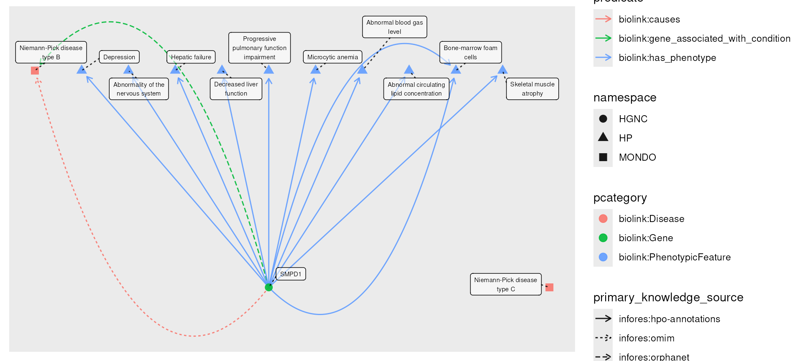
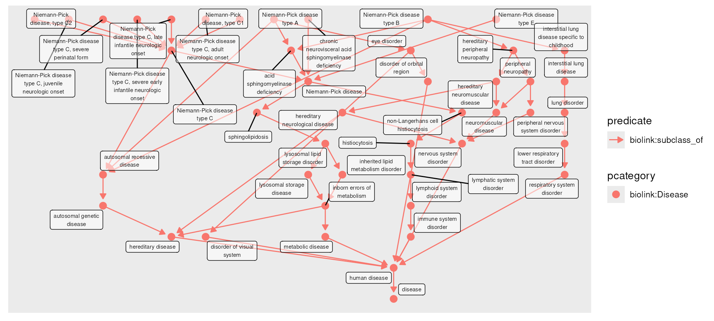
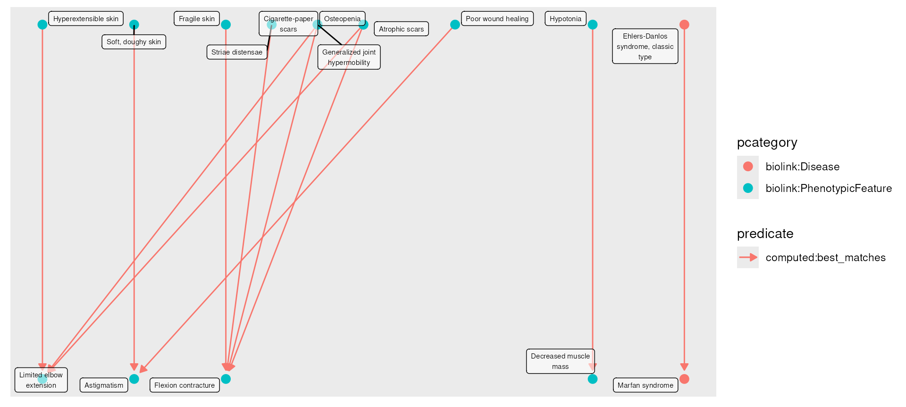
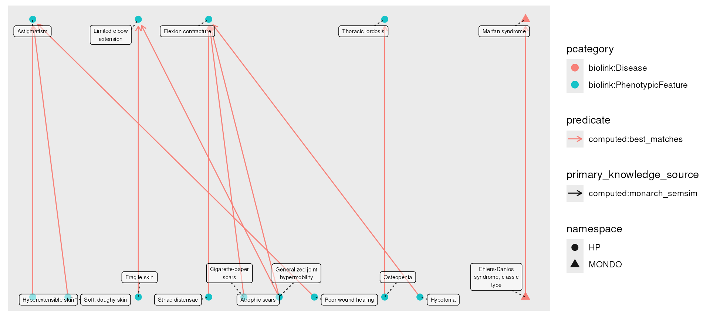

MonarchR Basics
Shawn T O’Neil
Vignette updated: Aug-05-2024
Source:vignettes/monarchr.Rmd
monarchr.RmdBackground: Biomedical Knowledge Graphs
Knowledge graphs (KGs) represent entities (such as genes, diseases,
or phenotypes) and the relationships between them; for example that the
CFTR gene causes the disease
Cystic fibrosis. In the Monarch Initiative KG, this
information is stored in a directed, labeled property graph,
with properties attached to the entities (nodes) and relationships
(edges). The KGX
format used by Monarch provides a simple specification for KGs:
- Nodes must have an
idproperty - Nodes must have a
categoryproperty, as a multi-valued set of category labels - Edges must have
subject,predicate, andobjectproperties, representing the source, relationship, and destination of the edge. - Nodes and edges may have additional properties, and these may be multi-valued.
In the following figure, these required properties are shown in bold:
The monarchr package provides access to the cloud-hosted
Monarch Initiative KG, and others in KGX
format via graph-database and file-based “engines”, with a simple
but flexible set of query functions. The example below finds all of the
sub-types of Neimann-Pick
Disease, and all of the genes associated with those. (You an use the
Monarch Initiative website to
identify IDs for genes, diseases, phenotypes and more, or
search_nodes() described below.)
# MONDO:0001982 Niemann-Pick Disease (13 subtypes)
g <- monarch_engine() |>
fetch_nodes(query_ids = c("MONDO:0001982")) |>
expand(predicates = "biolink:subclass_of", direction = "in", transitive = TRUE) |>
expand(categories = "biolink:Gene")## Fetching; counting matching nodes... total: 1.
## Fetching; fetched 1 of 1
## Expanding; counting matching edges... total: 13.
## Expanding; fetched 13 of 13 edges.
## Expanding; counting matching edges... total: 16.
## Expanding; fetched 16 of 16 edges.
plot(g)## Using "sugiyama" as default layout
g
Graph with 17 nodes and 29 edges. Expand sections below for details.
Node Data
Showing 17 of 17 nodes:
| id | pcategory | name | symbol | in_taxon_label | description | synonym (list) | category (list) | iri | xref (list) | namespace | provided_by (list) | full_name | in_taxon (list) |
|---|---|---|---|---|---|---|---|---|---|---|---|---|---|
| “MONDO:0001982” | “biolink:Disease” | “Niemann-Pick disease” | NA | NA | “A group of inherited, severe metabolic disorders in which sphingomyelin accumulates in lysosomes in cells. The lysosomes normally transport material through and out of the cell.” | c(“Niemann-Pick disease with cholesterol esterification block”, “Niemann-Pick disease, subacute juvenile form”, “lipoid histiocytosis”, “lipoid histiocytosis (classical phosphatide)”, “sphingomyelin lipidosis”, “sphingomyelin/cholesterol lipidosis”, “sphingomyelinase deficiency disease”, “type A Niemann-Pick disease”) | c(“biolink:BiologicalEntity”, “biolink:Disease”, “biolink:DiseaseOrPhenotypicFeature”, “biolink:Entity”, “biolink:NamedThing”, “biolink:ThingWithTaxon”) | “http://purl.obolibrary.org/obo/MONDO_0001982” | c(“DOID:14504”, “EFO:1001380”, “GARD:13334”, “MESH:D009542”, “NANDO:2200561”, “NCIT:C61269”, “SCTID:58459009”, “UMLS:C0028064”) | “MONDO” | “phenio_nodes” | NA | NULL |
| “MONDO:0011873” | “biolink:Disease” | “Niemann-Pick disease, type C2” | NA | NA | “Niemann-Pick disease type C2 is a rare metabolic condition that affects many different parts of the body. Although signs and symptoms can develop at any age (infancy through adulthood), most affected people develop features of the condition during childhood. Neimann-Pick disease type C2 may be characterized by ataxia (difficulty coordinating movements), vertical supranuclear gaze palsy (inability to move the eyes vertically), poor muscle tone, hepatosplenomegaly (enlarged liver and spleen), interstitial lung disease, intellectual decline, seizures, speech problems, and difficulty swallowing. Niemann-Pick disease type C2 is caused by changes (mutations) in the NPC2 gene and is inherited in an autosomal recessive manner. There is, unfortunately, no cure for Niemann-Pick disease type C2. Treatment is based on the signs and symptoms present in each person.” | c(“NPC2”, “Niemann-PICK disease, type C2”, “Niemann-Pick disease type C2”, “Niemann-Pick disease, type C2”, “type C2 Niemann-Pick disease”) | c(“biolink:BiologicalEntity”, “biolink:Disease”, “biolink:DiseaseOrPhenotypicFeature”, “biolink:Entity”, “biolink:NamedThing”, “biolink:ThingWithTaxon”) | “http://purl.obolibrary.org/obo/MONDO_0011873” | c(“DOID:0070114”, “GARD:3992”, “MESH:C536119”, “NCIT:C126865”, “OMIM:607625”, “UMLS:C1843366”) | “MONDO” | “phenio_nodes” | NA | NA |
| “MONDO:0018982” | “biolink:Disease” | “Niemann-Pick disease type C” | NA | NA | “NPC is a complex lipid storage disease mainly characterized by the accumulation of unesterified cholesterol in the late endosomal/lysosomal compartment.” | c(“NPC”, “Niemann Pick Disease Type C”) | c(“biolink:BiologicalEntity”, “biolink:Disease”, “biolink:DiseaseOrPhenotypicFeature”, “biolink:Entity”, “biolink:NamedThing”, “biolink:ThingWithTaxon”) | “http://purl.obolibrary.org/obo/MONDO_0018982” | c(“GARD:7207”, “MESH:D052556”, “NANDO:1200063”, “NORD:1509”, “Orphanet:646”, “SCTID:66751000”) | “MONDO” | “phenio_nodes” | NA | NULL |
| “MONDO:0011871” | “biolink:Disease” | “Niemann-Pick disease type B” | NA | NA | “Niemann-Pick disease type B is a mild subtype of Niemann-Pick disease, an autosomal recessive lysosomal disease, and is characterized clinically by onset in childhood with hepatosplenomegaly, growth retardation, and lung disorders such as infections and dyspnea” | c(“Niemann Pick disease type B”, “Niemann-PICK disease, type B”, “Niemann-Pick disease, Intermediate, with visceral involvement and rapid progression”, “Niemann-Pick disease, type E”, “Niemann-Pick disease, type F”, “type B Niemann-Pick disease”) | c(“biolink:BiologicalEntity”, “biolink:Disease”, “biolink:DiseaseOrPhenotypicFeature”, “biolink:Entity”, “biolink:NamedThing”, “biolink:ThingWithTaxon”) | “http://purl.obolibrary.org/obo/MONDO_0011871” | c(“DOID:0070112”, “GARD:10729”, “ICD10CM:E75.241”, “MESH:D052537”, “NANDO:1200062”, “NANDO:2201207”, “NCIT:C126866”, “OMIM:607616”, “Orphanet:77293”, “SCTID:39390005”, “UMLS:C0268243”) | “MONDO” | “phenio_nodes” | NA | NA |
| “MONDO:0100464” | “biolink:Disease” | “acid sphingomyelinase deficiency” | NA | NA | “An autosomal recessive lysosomal disease caused by biallelic loss of function variants in the SMPD1 gene. Clinical symptoms in affected individuals occur along a continuum. At the severe end of the spectrum are individuals historically diagnosed with Niemann-Pick disease type A (the neurovisceral form), which is characterized by hepatosplenomegaly with rapid neurological deterioration leading to death in the first few years of life. At the milder end of the spectrum are individuals historically diagnosed with Niemann-Pick disease type B, a later-onset, chronic visceral form, characterized by progressive visceral organ symptoms including hepatosplenomegaly and pulmonary insufficiency, and survival into adulthood. In addition, some affected individuals present with an intermediate phenotype, Niemann-Pick disease type A/B.” | NA | c(“biolink:BiologicalEntity”, “biolink:Disease”, “biolink:DiseaseOrPhenotypicFeature”, “biolink:Entity”, “biolink:NamedThing”, “biolink:ThingWithTaxon”) | “http://purl.obolibrary.org/obo/MONDO_0100464” | NA | “MONDO” | “phenio_nodes” | NA | NULL |
| “MONDO:0009757” | “biolink:Disease” | “Niemann-Pick disease, type C1” | NA | NA | “Type C Niemann-Pick disease associated with a mutation in the gene NPC1, encoding Niemann-Pick C1 protein.” | c(“NPC1”, “Niemann-PICK disease, type C1”, “Niemann-Pick disease type C1”, “Niemann-Pick disease with cholesterol esterification block”, “Niemann-Pick disease without sphingomyelinase deficiency”, “Niemann-Pick disease, chronic neuronopathic form”, “Niemann-Pick disease, nova Scotian type”, “Niemann-Pick disease, subacute juvenile form”, “Niemann-Pick disease, type C”, “Niemann-Pick disease, type C1”, “Niemann-Pick disease, type D”, “neurovisceral storage disease with vertical supranuclear ophthalmoplegia”, “type C1 Niemann-Pick disease”) | c(“biolink:BiologicalEntity”, “biolink:Disease”, “biolink:DiseaseOrPhenotypicFeature”, “biolink:Entity”, “biolink:NamedThing”, “biolink:ThingWithTaxon”) | “http://purl.obolibrary.org/obo/MONDO_0009757” | c(“DOID:0070113”, “NCIT:C126864”, “OMIM:257220”, “SCTID:18927009”, “UMLS:C3179455”) | “MONDO” | “phenio_nodes” | NA | NA |
| “MONDO:0009756” | “biolink:Disease” | “Niemann-Pick disease type A” | NA | NA | “Niemann-Pick disease type A is a very severe subtype of Niemann-Pick disease, an autosomal recessive lysosomal disease, and is characterized clinically by onset in infancy or early childhood with failure to thrive, hepatosplenomegaly, and rapidly progressive neurodegenerative disorders.” | c(“Niemann-PICK disease, type A”, “Niemann-Pick disease, Intermediate, protracted neurovisceral”, “sphingomyelin lipidosis”, “sphingomyelinase deficiency”) | c(“biolink:BiologicalEntity”, “biolink:Disease”, “biolink:DiseaseOrPhenotypicFeature”, “biolink:Entity”, “biolink:NamedThing”, “biolink:ThingWithTaxon”) | “http://purl.obolibrary.org/obo/MONDO_0009756” | c(“DOID:0070111”, “GARD:7206”, “MESH:D052536”, “NANDO:1200061”, “NANDO:2201206”, “NCIT:C126561”, “OMIM:257200”, “Orphanet:77292”, “SCTID:52165006”, “UMLS:C0268242”) | “MONDO” | “phenio_nodes” | NA | NA |
| “MONDO:0016306” | “biolink:Disease” | “Niemann-Pick disease type C, severe perinatal form” | NA | NA | NA | NA | c(“biolink:BiologicalEntity”, “biolink:Disease”, “biolink:DiseaseOrPhenotypicFeature”, “biolink:Entity”, “biolink:NamedThing”, “biolink:ThingWithTaxon”) | “http://purl.obolibrary.org/obo/MONDO_0016306” | c(“GARD:20504”, “Orphanet:216972”) | “MONDO” | “phenio_nodes” | NA | NA |
| “MONDO:0016307” | “biolink:Disease” | “Niemann-Pick disease type C, severe early infantile neurologic onset” | NA | NA | NA | NA | c(“biolink:BiologicalEntity”, “biolink:Disease”, “biolink:DiseaseOrPhenotypicFeature”, “biolink:Entity”, “biolink:NamedThing”, “biolink:ThingWithTaxon”) | “http://purl.obolibrary.org/obo/MONDO_0016307” | c(“GARD:20505”, “Orphanet:216975”) | “MONDO” | “phenio_nodes” | NA | NA |
| “MONDO:0016308” | “biolink:Disease” | “Niemann-Pick disease type C, late infantile neurologic onset” | NA | NA | NA | NA | c(“biolink:BiologicalEntity”, “biolink:Disease”, “biolink:DiseaseOrPhenotypicFeature”, “biolink:Entity”, “biolink:NamedThing”, “biolink:ThingWithTaxon”) | “http://purl.obolibrary.org/obo/MONDO_0016308” | c(“GARD:20506”, “Orphanet:216978”) | “MONDO” | “phenio_nodes” | NA | NA |
| “MONDO:0016310” | “biolink:Disease” | “Niemann-Pick disease type C, adult neurologic onset” | NA | NA | NA | NA | c(“biolink:BiologicalEntity”, “biolink:Disease”, “biolink:DiseaseOrPhenotypicFeature”, “biolink:Entity”, “biolink:NamedThing”, “biolink:ThingWithTaxon”) | “http://purl.obolibrary.org/obo/MONDO_0016310” | c(“GARD:20508”, “NANDO:1200065”, “NANDO:2201209”, “Orphanet:216986”) | “MONDO” | “phenio_nodes” | NA | NA |
| “MONDO:0016309” | “biolink:Disease” | “Niemann-Pick disease type C, juvenile neurologic onset” | NA | NA | NA | “Niemann-Pick disease type C, classic form” | c(“biolink:BiologicalEntity”, “biolink:Disease”, “biolink:DiseaseOrPhenotypicFeature”, “biolink:Entity”, “biolink:NamedThing”, “biolink:ThingWithTaxon”) | “http://purl.obolibrary.org/obo/MONDO_0016309” | c(“GARD:20507”, “Orphanet:216981”) | “MONDO” | “phenio_nodes” | NA | NA |
| “MONDO:0020384” | “biolink:Disease” | “Niemann-Pick disease type E” | NA | NA | “Niemann-Pick disease, type E is a poorly defined adult-onset and non-neuronopathic form of Niemann-Pick disease.” | NA | c(“biolink:BiologicalEntity”, “biolink:Disease”, “biolink:DiseaseOrPhenotypicFeature”, “biolink:Entity”, “biolink:NamedThing”, “biolink:ThingWithTaxon”) | “http://purl.obolibrary.org/obo/MONDO_0020384” | c(“Orphanet:99022”, “SCTID:73399005”) | “MONDO” | “phenio_nodes” | NA | NULL |
| “MONDO:0850058” | “biolink:Disease” | “chronic neurovisceral acid sphingomyelinase deficiency” | NA | NA | NA | NA | c(“biolink:BiologicalEntity”, “biolink:Disease”, “biolink:DiseaseOrPhenotypicFeature”, “biolink:Entity”, “biolink:NamedThing”, “biolink:ThingWithTaxon”) | “http://purl.obolibrary.org/obo/MONDO_0850058” | c(“GARD:22456”, “Orphanet:618891”) | “MONDO” | “phenio_nodes” | NA | NULL |
| “HGNC:7897” | “biolink:Gene” | “NPC1” | “NPC1” | “Homo sapiens” | NA | c(“Niemann-Pick disease, type C1”, “SLC65A1”) | c(“biolink:BiologicalEntity”, “biolink:ChemicalEntityOrGeneOrGeneProduct”, “biolink:Entity”, “biolink:Gene”, “biolink:GeneOrGeneProduct”, “biolink:GenomicEntity”, “biolink:MacromolecularMachineMixin”, “biolink:NamedThing”, “biolink:OntologyClass”, “biolink:PhysicalEssence”, “biolink:PhysicalEssenceOrOccurrent”, “biolink:ThingWithTaxon”) | NA | c(“ENSEMBL:ENSG00000141458”, “OMIM:607623”) | “HGNC” | “hgnc_gene_nodes” | “NPC intracellular cholesterol transporter 1” | “NCBITaxon:9606” |
| “HGNC:14537” | “biolink:Gene” | “NPC2” | “NPC2” | “Homo sapiens” | NA | c(“EDDM1”, “HE1”, “NP-C2”, “Niemann-Pick disease, type C2”, “epididymal protein 1”) | c(“biolink:BiologicalEntity”, “biolink:ChemicalEntityOrGeneOrGeneProduct”, “biolink:Entity”, “biolink:Gene”, “biolink:GeneOrGeneProduct”, “biolink:GenomicEntity”, “biolink:MacromolecularMachineMixin”, “biolink:NamedThing”, “biolink:OntologyClass”, “biolink:PhysicalEssence”, “biolink:PhysicalEssenceOrOccurrent”, “biolink:ThingWithTaxon”) | NA | c(“ENSEMBL:ENSG00000119655”, “OMIM:601015”) | “HGNC” | “hgnc_gene_nodes” | “NPC intracellular cholesterol transporter 2” | “NCBITaxon:9606” |
| “HGNC:11120” | “biolink:Gene” | “SMPD1” | “SMPD1” | “Homo sapiens” | NA | c(“ASM”, “Niemann-Pick type A/B”, “acid sphingomyelinase”, “sphingomyelin phosphodiesterase 1, acid lysosomal”) | c(“biolink:BiologicalEntity”, “biolink:ChemicalEntityOrGeneOrGeneProduct”, “biolink:Entity”, “biolink:Gene”, “biolink:GeneOrGeneProduct”, “biolink:GenomicEntity”, “biolink:MacromolecularMachineMixin”, “biolink:NamedThing”, “biolink:OntologyClass”, “biolink:PhysicalEssence”, “biolink:PhysicalEssenceOrOccurrent”, “biolink:ThingWithTaxon”) | NA | c(“ENSEMBL:ENSG00000166311”, “OMIM:607608”) | “HGNC” | “hgnc_gene_nodes” | “sphingomyelin phosphodiesterase 1” | “NCBITaxon:9606” |
Edge Data
Showing 29 of 29 edges:
| from | to | subject | predicate | object | agent_type | knowledge_level | knowledge_source | aggregator_knowledge_source (list) | primary_knowledge_source | provided_by (list) | id | category (list) | original_subject | original_object |
|---|---|---|---|---|---|---|---|---|---|---|---|---|---|---|
| 2 | 3 | “MONDO:0011873” | “biolink:subclass_of” | “MONDO:0018982” | “not_provided” | “not_provided” | “monarch-kg_edges.jsonl” | c(“infores:monarchinitiative”, “infores:phenio”) | “infores:mondo” | “phenio_edges” | “urn:uuid:869fd120-310a-4482-8e77-3016a318325b” | c(“biolink:Association”, “biolink:Entity”) | NA | NA |
| 4 | 5 | “MONDO:0011871” | “biolink:subclass_of” | “MONDO:0100464” | “not_provided” | “not_provided” | “monarch-kg_edges.jsonl” | c(“infores:monarchinitiative”, “infores:phenio”) | “infores:mondo” | “phenio_edges” | “urn:uuid:5d8b3ff4-8ec8-44bc-8e76-46fff5ad11cd” | c(“biolink:Association”, “biolink:Entity”) | NA | NA |
| 6 | 3 | “MONDO:0009757” | “biolink:subclass_of” | “MONDO:0018982” | “not_provided” | “not_provided” | “monarch-kg_edges.jsonl” | c(“infores:monarchinitiative”, “infores:phenio”) | “infores:mondo” | “phenio_edges” | “urn:uuid:fbebb7de-1cb9-4f90-932a-46819db221e8” | c(“biolink:Association”, “biolink:Entity”) | NA | NA |
| 7 | 5 | “MONDO:0009756” | “biolink:subclass_of” | “MONDO:0100464” | “not_provided” | “not_provided” | “monarch-kg_edges.jsonl” | c(“infores:monarchinitiative”, “infores:phenio”) | “infores:mondo” | “phenio_edges” | “urn:uuid:3ca10a53-3a7d-42cb-b9b2-2278ef8504ba” | c(“biolink:Association”, “biolink:Entity”) | NA | NA |
| 8 | 3 | “MONDO:0016306” | “biolink:subclass_of” | “MONDO:0018982” | “not_provided” | “not_provided” | “monarch-kg_edges.jsonl” | c(“infores:monarchinitiative”, “infores:phenio”) | “infores:mondo” | “phenio_edges” | “urn:uuid:4df66b1f-981b-4d05-a0eb-9986122673fc” | c(“biolink:Association”, “biolink:Entity”) | NA | NA |
| 9 | 3 | “MONDO:0016307” | “biolink:subclass_of” | “MONDO:0018982” | “not_provided” | “not_provided” | “monarch-kg_edges.jsonl” | c(“infores:monarchinitiative”, “infores:phenio”) | “infores:mondo” | “phenio_edges” | “urn:uuid:448c936b-6c74-4340-8d52-593f1835da95” | c(“biolink:Association”, “biolink:Entity”) | NA | NA |
| 10 | 3 | “MONDO:0016308” | “biolink:subclass_of” | “MONDO:0018982” | “not_provided” | “not_provided” | “monarch-kg_edges.jsonl” | c(“infores:monarchinitiative”, “infores:phenio”) | “infores:mondo” | “phenio_edges” | “urn:uuid:12b0ebc5-a33b-4b05-943f-528d753c2ccd” | c(“biolink:Association”, “biolink:Entity”) | NA | NA |
| 11 | 3 | “MONDO:0016310” | “biolink:subclass_of” | “MONDO:0018982” | “not_provided” | “not_provided” | “monarch-kg_edges.jsonl” | c(“infores:monarchinitiative”, “infores:phenio”) | “infores:mondo” | “phenio_edges” | “urn:uuid:966840e8-2184-48fa-9aaf-56b47c501352” | c(“biolink:Association”, “biolink:Entity”) | NA | NA |
| 12 | 3 | “MONDO:0016309” | “biolink:subclass_of” | “MONDO:0018982” | “not_provided” | “not_provided” | “monarch-kg_edges.jsonl” | c(“infores:monarchinitiative”, “infores:phenio”) | “infores:mondo” | “phenio_edges” | “urn:uuid:c88be317-99f7-4031-9aed-647ce2bbbc88” | c(“biolink:Association”, “biolink:Entity”) | NA | NA |
| 3 | 1 | “MONDO:0018982” | “biolink:subclass_of” | “MONDO:0001982” | “not_provided” | “not_provided” | “monarch-kg_edges.jsonl” | c(“infores:monarchinitiative”, “infores:phenio”) | “infores:mondo” | “phenio_edges” | “urn:uuid:3450e760-7666-43ec-819c-19d114fa9a88” | c(“biolink:Association”, “biolink:Entity”) | NA | NA |
| 13 | 1 | “MONDO:0020384” | “biolink:subclass_of” | “MONDO:0001982” | “not_provided” | “not_provided” | “monarch-kg_edges.jsonl” | c(“infores:monarchinitiative”, “infores:phenio”) | “infores:mondo” | “phenio_edges” | “urn:uuid:7ca6492d-0697-4a4f-8383-9c53e58add1e” | c(“biolink:Association”, “biolink:Entity”) | NA | NA |
| 5 | 1 | “MONDO:0100464” | “biolink:subclass_of” | “MONDO:0001982” | “not_provided” | “not_provided” | “monarch-kg_edges.jsonl” | c(“infores:monarchinitiative”, “infores:phenio”) | “infores:mondo” | “phenio_edges” | “urn:uuid:a62ee5a6-011c-44b2-b48e-2f0ab595dadb” | c(“biolink:Association”, “biolink:Entity”) | NA | NA |
| 14 | 1 | “MONDO:0850058” | “biolink:subclass_of” | “MONDO:0001982” | “not_provided” | “not_provided” | “monarch-kg_edges.jsonl” | c(“infores:monarchinitiative”, “infores:phenio”) | “infores:mondo” | “phenio_edges” | “urn:uuid:834c7761-1f42-454b-8726-9b85c3ab2bd5” | c(“biolink:Association”, “biolink:Entity”) | NA | NA |
| 15 | 6 | “HGNC:7897” | “biolink:causes” | “MONDO:0009757” | “manual_agent” | “knowledge_assertion” | “monarch-kg_edges.jsonl” | c(“infores:medgen”, “infores:monarchinitiative”) | “infores:omim” | “hpoa_gene_to_disease_edges” | “uuid:6337715f-400a-11ef-89e7-6fe0be41fbbf” | c(“biolink:Association”, “biolink:CausalGeneToDiseaseAssociation”, “biolink:Entity”, “biolink:EntityToDiseaseAssociationMixin”, “biolink:EntityToFeatureOrDiseaseQualifiersMixin”, “biolink:EntityToPhenotypicFeatureAssociationMixin”, “biolink:FrequencyQualifierMixin”, “biolink:FrequencyQuantifier”, “biolink:GeneToDiseaseAssociation”, “biolink:GeneToDiseaseOrPhenotypicFeatureAssociation”, “biolink:GeneToEntityAssociationMixin”, “biolink:RelationshipQuantifier”) | “NCBIGene:4864” | “OMIM:257220” |
| 16 | 2 | “HGNC:14537” | “biolink:causes” | “MONDO:0011873” | “manual_agent” | “knowledge_assertion” | “monarch-kg_edges.jsonl” | c(“infores:medgen”, “infores:monarchinitiative”) | “infores:omim” | “hpoa_gene_to_disease_edges” | “uuid:631aaa18-400a-11ef-89e7-6fe0be41fbbf” | c(“biolink:Association”, “biolink:CausalGeneToDiseaseAssociation”, “biolink:Entity”, “biolink:EntityToDiseaseAssociationMixin”, “biolink:EntityToFeatureOrDiseaseQualifiersMixin”, “biolink:EntityToPhenotypicFeatureAssociationMixin”, “biolink:FrequencyQualifierMixin”, “biolink:FrequencyQuantifier”, “biolink:GeneToDiseaseAssociation”, “biolink:GeneToDiseaseOrPhenotypicFeatureAssociation”, “biolink:GeneToEntityAssociationMixin”, “biolink:RelationshipQuantifier”) | “NCBIGene:10577” | “OMIM:607625” |
| 17 | 4 | “HGNC:11120” | “biolink:causes” | “MONDO:0011871” | “manual_agent” | “knowledge_assertion” | “monarch-kg_edges.jsonl” | c(“infores:medgen”, “infores:monarchinitiative”) | “infores:omim” | “hpoa_gene_to_disease_edges” | “uuid:631aaa33-400a-11ef-89e7-6fe0be41fbbf” | c(“biolink:Association”, “biolink:CausalGeneToDiseaseAssociation”, “biolink:Entity”, “biolink:EntityToDiseaseAssociationMixin”, “biolink:EntityToFeatureOrDiseaseQualifiersMixin”, “biolink:EntityToPhenotypicFeatureAssociationMixin”, “biolink:FrequencyQualifierMixin”, “biolink:FrequencyQuantifier”, “biolink:GeneToDiseaseAssociation”, “biolink:GeneToDiseaseOrPhenotypicFeatureAssociation”, “biolink:GeneToEntityAssociationMixin”, “biolink:RelationshipQuantifier”) | “NCBIGene:6609” | “OMIM:607616” |
| 17 | 7 | “HGNC:11120” | “biolink:causes” | “MONDO:0009756” | “manual_agent” | “knowledge_assertion” | “monarch-kg_edges.jsonl” | c(“infores:medgen”, “infores:monarchinitiative”) | “infores:omim” | “hpoa_gene_to_disease_edges” | “uuid:633771f1-400a-11ef-89e7-6fe0be41fbbf” | c(“biolink:Association”, “biolink:CausalGeneToDiseaseAssociation”, “biolink:Entity”, “biolink:EntityToDiseaseAssociationMixin”, “biolink:EntityToFeatureOrDiseaseQualifiersMixin”, “biolink:EntityToPhenotypicFeatureAssociationMixin”, “biolink:FrequencyQualifierMixin”, “biolink:FrequencyQuantifier”, “biolink:GeneToDiseaseAssociation”, “biolink:GeneToDiseaseOrPhenotypicFeatureAssociation”, “biolink:GeneToEntityAssociationMixin”, “biolink:RelationshipQuantifier”) | “NCBIGene:6609” | “OMIM:257200” |
| 15 | 8 | “HGNC:7897” | “biolink:gene_associated_with_condition” | “MONDO:0016306” | “manual_agent” | “knowledge_assertion” | “monarch-kg_edges.jsonl” | “infores:monarchinitiative” | “infores:orphanet” | “hpoa_gene_to_disease_edges” | “uuid:635d9131-400a-11ef-89e7-6fe0be41fbbf” | c(“biolink:Association”, “biolink:CorrelatedGeneToDiseaseAssociation”, “biolink:Entity”, “biolink:EntityToDiseaseAssociationMixin”, “biolink:EntityToFeatureOrDiseaseQualifiersMixin”, “biolink:EntityToPhenotypicFeatureAssociationMixin”, “biolink:FrequencyQualifierMixin”, “biolink:FrequencyQuantifier”, “biolink:GeneToDiseaseAssociation”, “biolink:GeneToDiseaseOrPhenotypicFeatureAssociation”, “biolink:GeneToEntityAssociationMixin”, “biolink:RelationshipQuantifier”) | “NCBIGene:4864” | “Orphanet:216972” |
| 15 | 9 | “HGNC:7897” | “biolink:gene_associated_with_condition” | “MONDO:0016307” | “manual_agent” | “knowledge_assertion” | “monarch-kg_edges.jsonl” | “infores:monarchinitiative” | “infores:orphanet” | “hpoa_gene_to_disease_edges” | “uuid:635d9133-400a-11ef-89e7-6fe0be41fbbf” | c(“biolink:Association”, “biolink:CorrelatedGeneToDiseaseAssociation”, “biolink:Entity”, “biolink:EntityToDiseaseAssociationMixin”, “biolink:EntityToFeatureOrDiseaseQualifiersMixin”, “biolink:EntityToPhenotypicFeatureAssociationMixin”, “biolink:FrequencyQualifierMixin”, “biolink:FrequencyQuantifier”, “biolink:GeneToDiseaseAssociation”, “biolink:GeneToDiseaseOrPhenotypicFeatureAssociation”, “biolink:GeneToEntityAssociationMixin”, “biolink:RelationshipQuantifier”) | “NCBIGene:4864” | “Orphanet:216975” |
| 15 | 10 | “HGNC:7897” | “biolink:gene_associated_with_condition” | “MONDO:0016308” | “manual_agent” | “knowledge_assertion” | “monarch-kg_edges.jsonl” | “infores:monarchinitiative” | “infores:orphanet” | “hpoa_gene_to_disease_edges” | “uuid:635d9137-400a-11ef-89e7-6fe0be41fbbf” | c(“biolink:Association”, “biolink:CorrelatedGeneToDiseaseAssociation”, “biolink:Entity”, “biolink:EntityToDiseaseAssociationMixin”, “biolink:EntityToFeatureOrDiseaseQualifiersMixin”, “biolink:EntityToPhenotypicFeatureAssociationMixin”, “biolink:FrequencyQualifierMixin”, “biolink:FrequencyQuantifier”, “biolink:GeneToDiseaseAssociation”, “biolink:GeneToDiseaseOrPhenotypicFeatureAssociation”, “biolink:GeneToEntityAssociationMixin”, “biolink:RelationshipQuantifier”) | “NCBIGene:4864” | “Orphanet:216978” |
| 15 | 11 | “HGNC:7897” | “biolink:gene_associated_with_condition” | “MONDO:0016310” | “manual_agent” | “knowledge_assertion” | “monarch-kg_edges.jsonl” | “infores:monarchinitiative” | “infores:orphanet” | “hpoa_gene_to_disease_edges” | “uuid:635d9179-400a-11ef-89e7-6fe0be41fbbf” | c(“biolink:Association”, “biolink:CorrelatedGeneToDiseaseAssociation”, “biolink:Entity”, “biolink:EntityToDiseaseAssociationMixin”, “biolink:EntityToFeatureOrDiseaseQualifiersMixin”, “biolink:EntityToPhenotypicFeatureAssociationMixin”, “biolink:FrequencyQualifierMixin”, “biolink:FrequencyQuantifier”, “biolink:GeneToDiseaseAssociation”, “biolink:GeneToDiseaseOrPhenotypicFeatureAssociation”, “biolink:GeneToEntityAssociationMixin”, “biolink:RelationshipQuantifier”) | “NCBIGene:4864” | “Orphanet:216986” |
| 15 | 12 | “HGNC:7897” | “biolink:gene_associated_with_condition” | “MONDO:0016309” | “manual_agent” | “knowledge_assertion” | “monarch-kg_edges.jsonl” | “infores:monarchinitiative” | “infores:orphanet” | “hpoa_gene_to_disease_edges” | “uuid:635d9185-400a-11ef-89e7-6fe0be41fbbf” | c(“biolink:Association”, “biolink:CorrelatedGeneToDiseaseAssociation”, “biolink:Entity”, “biolink:EntityToDiseaseAssociationMixin”, “biolink:EntityToFeatureOrDiseaseQualifiersMixin”, “biolink:EntityToPhenotypicFeatureAssociationMixin”, “biolink:FrequencyQualifierMixin”, “biolink:FrequencyQuantifier”, “biolink:GeneToDiseaseAssociation”, “biolink:GeneToDiseaseOrPhenotypicFeatureAssociation”, “biolink:GeneToEntityAssociationMixin”, “biolink:RelationshipQuantifier”) | “NCBIGene:4864” | “Orphanet:216981” |
| 16 | 8 | “HGNC:14537” | “biolink:gene_associated_with_condition” | “MONDO:0016306” | “manual_agent” | “knowledge_assertion” | “monarch-kg_edges.jsonl” | “infores:monarchinitiative” | “infores:orphanet” | “hpoa_gene_to_disease_edges” | “uuid:635d9130-400a-11ef-89e7-6fe0be41fbbf” | c(“biolink:Association”, “biolink:CorrelatedGeneToDiseaseAssociation”, “biolink:Entity”, “biolink:EntityToDiseaseAssociationMixin”, “biolink:EntityToFeatureOrDiseaseQualifiersMixin”, “biolink:EntityToPhenotypicFeatureAssociationMixin”, “biolink:FrequencyQualifierMixin”, “biolink:FrequencyQuantifier”, “biolink:GeneToDiseaseAssociation”, “biolink:GeneToDiseaseOrPhenotypicFeatureAssociation”, “biolink:GeneToEntityAssociationMixin”, “biolink:RelationshipQuantifier”) | “NCBIGene:10577” | “Orphanet:216972” |
| 16 | 9 | “HGNC:14537” | “biolink:gene_associated_with_condition” | “MONDO:0016307” | “manual_agent” | “knowledge_assertion” | “monarch-kg_edges.jsonl” | “infores:monarchinitiative” | “infores:orphanet” | “hpoa_gene_to_disease_edges” | “uuid:635d9132-400a-11ef-89e7-6fe0be41fbbf” | c(“biolink:Association”, “biolink:CorrelatedGeneToDiseaseAssociation”, “biolink:Entity”, “biolink:EntityToDiseaseAssociationMixin”, “biolink:EntityToFeatureOrDiseaseQualifiersMixin”, “biolink:EntityToPhenotypicFeatureAssociationMixin”, “biolink:FrequencyQualifierMixin”, “biolink:FrequencyQuantifier”, “biolink:GeneToDiseaseAssociation”, “biolink:GeneToDiseaseOrPhenotypicFeatureAssociation”, “biolink:GeneToEntityAssociationMixin”, “biolink:RelationshipQuantifier”) | “NCBIGene:10577” | “Orphanet:216975” |
| 16 | 10 | “HGNC:14537” | “biolink:gene_associated_with_condition” | “MONDO:0016308” | “manual_agent” | “knowledge_assertion” | “monarch-kg_edges.jsonl” | “infores:monarchinitiative” | “infores:orphanet” | “hpoa_gene_to_disease_edges” | “uuid:635d9136-400a-11ef-89e7-6fe0be41fbbf” | c(“biolink:Association”, “biolink:CorrelatedGeneToDiseaseAssociation”, “biolink:Entity”, “biolink:EntityToDiseaseAssociationMixin”, “biolink:EntityToFeatureOrDiseaseQualifiersMixin”, “biolink:EntityToPhenotypicFeatureAssociationMixin”, “biolink:FrequencyQualifierMixin”, “biolink:FrequencyQuantifier”, “biolink:GeneToDiseaseAssociation”, “biolink:GeneToDiseaseOrPhenotypicFeatureAssociation”, “biolink:GeneToEntityAssociationMixin”, “biolink:RelationshipQuantifier”) | “NCBIGene:10577” | “Orphanet:216978” |
| 16 | 11 | “HGNC:14537” | “biolink:gene_associated_with_condition” | “MONDO:0016310” | “manual_agent” | “knowledge_assertion” | “monarch-kg_edges.jsonl” | “infores:monarchinitiative” | “infores:orphanet” | “hpoa_gene_to_disease_edges” | “uuid:635d9178-400a-11ef-89e7-6fe0be41fbbf” | c(“biolink:Association”, “biolink:CorrelatedGeneToDiseaseAssociation”, “biolink:Entity”, “biolink:EntityToDiseaseAssociationMixin”, “biolink:EntityToFeatureOrDiseaseQualifiersMixin”, “biolink:EntityToPhenotypicFeatureAssociationMixin”, “biolink:FrequencyQualifierMixin”, “biolink:FrequencyQuantifier”, “biolink:GeneToDiseaseAssociation”, “biolink:GeneToDiseaseOrPhenotypicFeatureAssociation”, “biolink:GeneToEntityAssociationMixin”, “biolink:RelationshipQuantifier”) | “NCBIGene:10577” | “Orphanet:216986” |
| 16 | 12 | “HGNC:14537” | “biolink:gene_associated_with_condition” | “MONDO:0016309” | “manual_agent” | “knowledge_assertion” | “monarch-kg_edges.jsonl” | “infores:monarchinitiative” | “infores:orphanet” | “hpoa_gene_to_disease_edges” | “uuid:635d9184-400a-11ef-89e7-6fe0be41fbbf” | c(“biolink:Association”, “biolink:CorrelatedGeneToDiseaseAssociation”, “biolink:Entity”, “biolink:EntityToDiseaseAssociationMixin”, “biolink:EntityToFeatureOrDiseaseQualifiersMixin”, “biolink:EntityToPhenotypicFeatureAssociationMixin”, “biolink:FrequencyQualifierMixin”, “biolink:FrequencyQuantifier”, “biolink:GeneToDiseaseAssociation”, “biolink:GeneToDiseaseOrPhenotypicFeatureAssociation”, “biolink:GeneToEntityAssociationMixin”, “biolink:RelationshipQuantifier”) | “NCBIGene:10577” | “Orphanet:216981” |
| 17 | 4 | “HGNC:11120” | “biolink:gene_associated_with_condition” | “MONDO:0011871” | “manual_agent” | “knowledge_assertion” | “monarch-kg_edges.jsonl” | “infores:monarchinitiative” | “infores:orphanet” | “hpoa_gene_to_disease_edges” | “uuid:6379fea2-400a-11ef-89e7-6fe0be41fbbf” | c(“biolink:Association”, “biolink:CorrelatedGeneToDiseaseAssociation”, “biolink:Entity”, “biolink:EntityToDiseaseAssociationMixin”, “biolink:EntityToFeatureOrDiseaseQualifiersMixin”, “biolink:EntityToPhenotypicFeatureAssociationMixin”, “biolink:FrequencyQualifierMixin”, “biolink:FrequencyQuantifier”, “biolink:GeneToDiseaseAssociation”, “biolink:GeneToDiseaseOrPhenotypicFeatureAssociation”, “biolink:GeneToEntityAssociationMixin”, “biolink:RelationshipQuantifier”) | “NCBIGene:6609” | “Orphanet:77293” |
| 17 | 7 | “HGNC:11120” | “biolink:gene_associated_with_condition” | “MONDO:0009756” | “manual_agent” | “knowledge_assertion” | “monarch-kg_edges.jsonl” | “infores:monarchinitiative” | “infores:orphanet” | “hpoa_gene_to_disease_edges” | “uuid:6379fea3-400a-11ef-89e7-6fe0be41fbbf” | c(“biolink:Association”, “biolink:CorrelatedGeneToDiseaseAssociation”, “biolink:Entity”, “biolink:EntityToDiseaseAssociationMixin”, “biolink:EntityToFeatureOrDiseaseQualifiersMixin”, “biolink:EntityToPhenotypicFeatureAssociationMixin”, “biolink:FrequencyQualifierMixin”, “biolink:FrequencyQuantifier”, “biolink:GeneToDiseaseAssociation”, “biolink:GeneToDiseaseOrPhenotypicFeatureAssociation”, “biolink:GeneToEntityAssociationMixin”, “biolink:RelationshipQuantifier”) | “NCBIGene:6609” | “Orphanet:77292” |
Backed by tidygraph and igraph,
monarchr is part of a larger ecosystem of graph analyses in
R:
- Graph joins, filters, and other manipulation:
tidygraph - Visualization:
- ggplot-based:
ggraph, - Interactive:
visNetwork,threejs
- ggplot-based:
- Exploratory analyses:
EGAnet - Graph algorithms:
- Various:
igraph,migraph,netrankr - Matching:
iGraphMatch - Graph neural networks:
spinner - Clustering:
clustAnalytics - Community detection:
leidenAlg - Link prediction:
linkprediction
- Various:
- Other:
Engines
Two kinds of engines are supported, providing largely the same
functionality: one supporting access to Neo4j graph databases, and another
supporting file-based access to TSV-formatted .tar.gz KGs
hosted at kghub.io. Regardless of source,
KGs must conform to the KGX
specification.
The most accessible engine provided by monarchr is the
monarch_engine(), designed specifically to access the
cloud-hosted Monarch
Initiative KG.
monarch <- monarch_engine()Using another Neo4j database via neo4j_engine() is as
simple as specifying a Neo4j Bolt
endpoint, and username and password if required. This may be used to
host your own Neo4j database for efficient KG access, based on the
Monarch Neo4j docker
deployment.
neodb <- neo4j_engine("http://localhost:7687", username = "user", password = "pass")Finally, the file_engine() provides KG access to
KGX-formatted, .tar.gz files containing tab-separated
*_nodes.tsv and *_edges.tsv files. The package
comes bundled with a version of the MONDO ontology KG for demonstration
purposes. You can also provide a local file path, or a URL to a remote
file, which will be downloaded to the current working directory.
filename <- system.file("extdata", "mondo_kgx_tsv.tar.gz", package = "monarchr")
# filename <- "https://kghub.io/kg-obo/mondo/2024-03-04/mondo_kgx_tsv.tar.gz"
mondo <- file_engine(filename)Fetching Nodes
Engines support a fetch_nodes() function for pulling
nodes by specified criteria. It returns a tidygraph-based
graph, but only nodes, not any edges that may connect them. These can be
specified as a set of IDs:
g <- monarch |>
fetch_nodes(query_ids = c("MONDO:0009061", "HGNC:1884"))
gGraph with 2 nodes and 0 edges. Expand sections below for details.
Node Data
Showing 2 of 2 nodes:
| id | pcategory | name | symbol | in_taxon_label | description | synonym (list) | category (list) | xref (list) | full_name | in_taxon (list) | namespace | provided_by (list) | iri |
|---|---|---|---|---|---|---|---|---|---|---|---|---|---|
| “HGNC:1884” | “biolink:Gene” | “CFTR” | “CFTR” | “Homo sapiens” | NA | c(“ABC35”, “ABCC7”, “ATP-binding cassette sub-family C, member 7”, “CF”, “CFTR/MRP”, “MRP7”, “TNR-CFTR”, “cystic fibrosis transmembrane conductance regulator, ATP-binding cassette (sub-family C, member 7)”, “dJ760C5.1”) | c(“biolink:BiologicalEntity”, “biolink:ChemicalEntityOrGeneOrGeneProduct”, “biolink:Entity”, “biolink:Gene”, “biolink:GeneOrGeneProduct”, “biolink:GenomicEntity”, “biolink:MacromolecularMachineMixin”, “biolink:NamedThing”, “biolink:OntologyClass”, “biolink:PhysicalEssence”, “biolink:PhysicalEssenceOrOccurrent”, “biolink:ThingWithTaxon”) | c(“ENSEMBL:ENSG00000001626”, “OMIM:602421”) | “CF transmembrane conductance regulator” | “NCBITaxon:9606” | “HGNC” | “hgnc_gene_nodes” | NA |
| “MONDO:0009061” | “biolink:Disease” | “cystic fibrosis” | NA | NA | “Cystic fibrosis (CF) is a genetic disorder characterized by the production of sweat with a high salt content and mucus secretions with an abnormal viscosity.” | c(“CF”, “cystic fibrosis”, “cystic fibrosis lung disease, modifier of”, “mucoviscidosis”, “pseudomonas aeruginosa, susceptibility to chronic infection by, in cystic fibrosis”) | c(“biolink:BiologicalEntity”, “biolink:Disease”, “biolink:DiseaseOrPhenotypicFeature”, “biolink:Entity”, “biolink:NamedThing”, “biolink:ThingWithTaxon”) | c(“DOID:1485”, “GARD:6233”, “ICD10CM:E84”, “ICD9:277.0”, “MESH:D003550”, “MedDRA:10011762”, “NANDO:1200922”, “NANDO:1201021”, “NANDO:2100035”, “NANDO:2200205”, “NCIT:C2975”, “NORD:1026”, “OMIM:219700”, “Orphanet:586”, “SCTID:190905008”, “UMLS:C0010674”, “icd11.foundation:514403112”) | NA | NA | “MONDO” | “phenio_nodes” | “http://purl.obolibrary.org/obo/MONDO_0009061” |
Edge Data
Showing 0 of 0 edges:
Nodes can also be fetched in bulk. For example, we can fetch
all of the nodes where in_taxon_label equals
"Homo sapiens". For demonstration purposes, we’ll limit the
number of results to 20 (ordered by node ID).
h_sapiens_nodes <- monarch |>
fetch_nodes(in_taxon_label == "Homo sapiens", limit = 20)
h_sapiens_nodesGraph with 20 nodes and 0 edges. Expand sections below for details.
Node Data
Showing 20 of 20 nodes:
| id | pcategory | name | in_taxon_label | category (list) | xref (list) | in_taxon (list) | has_gene (list) | provided_by (list) |
|---|---|---|---|---|---|---|---|---|
| “CA10014591” | “biolink:BiologicalEntity” | “NM_001754.5:c.110G>T” | “Homo sapiens” | c(“biolink:BiologicalEntity”, “biolink:Entity”, “biolink:GenomicEntity”, “biolink:NamedThing”, “biolink:OntologyClass”, “biolink:PhysicalEssence”, “biolink:PhysicalEssenceOrOccurrent”, “biolink:SequenceVariant”, “biolink:ThingWithTaxon”) | “CA10014591” | “NCBITaxon:9606” | “HGNC:10471” | “clingen_variant_nodes” |
| “CA10549330” | “biolink:BiologicalEntity” | “NM_001142805.2:c.808G>A” | “Homo sapiens” | c(“biolink:BiologicalEntity”, “biolink:Entity”, “biolink:GenomicEntity”, “biolink:NamedThing”, “biolink:OntologyClass”, “biolink:PhysicalEssence”, “biolink:PhysicalEssenceOrOccurrent”, “biolink:SequenceVariant”, “biolink:ThingWithTaxon”) | “CA10549330” | “NCBITaxon:9606” | “HGNC:11055” | “clingen_variant_nodes” |
| “CA10549339” | “biolink:BiologicalEntity” | “NM_001142805.2:c.880A>C” | “Homo sapiens” | c(“biolink:BiologicalEntity”, “biolink:Entity”, “biolink:GenomicEntity”, “biolink:NamedThing”, “biolink:OntologyClass”, “biolink:PhysicalEssence”, “biolink:PhysicalEssenceOrOccurrent”, “biolink:SequenceVariant”, “biolink:ThingWithTaxon”) | “CA10549339” | “NCBITaxon:9606” | “HGNC:11055” | “clingen_variant_nodes” |
| “CA10549367” | “biolink:BiologicalEntity” | “NM_001142805.2:c.942C>G” | “Homo sapiens” | c(“biolink:BiologicalEntity”, “biolink:Entity”, “biolink:GenomicEntity”, “biolink:NamedThing”, “biolink:OntologyClass”, “biolink:PhysicalEssence”, “biolink:PhysicalEssenceOrOccurrent”, “biolink:SequenceVariant”, “biolink:ThingWithTaxon”) | “CA10549367” | “NCBITaxon:9606” | “HGNC:11055” | “clingen_variant_nodes” |
| “CA10549369” | “biolink:BiologicalEntity” | “NM_001142805.2:c.952G>A” | “Homo sapiens” | c(“biolink:BiologicalEntity”, “biolink:Entity”, “biolink:GenomicEntity”, “biolink:NamedThing”, “biolink:OntologyClass”, “biolink:PhysicalEssence”, “biolink:PhysicalEssenceOrOccurrent”, “biolink:SequenceVariant”, “biolink:ThingWithTaxon”) | “CA10549369” | “NCBITaxon:9606” | “HGNC:11055” | “clingen_variant_nodes” |
| “CA10602335” | “biolink:BiologicalEntity” | “NM_000277.1:c.971T>A” | “Homo sapiens” | c(“biolink:BiologicalEntity”, “biolink:Entity”, “biolink:GenomicEntity”, “biolink:NamedThing”, “biolink:OntologyClass”, “biolink:PhysicalEssence”, “biolink:PhysicalEssenceOrOccurrent”, “biolink:SequenceVariant”, “biolink:ThingWithTaxon”) | “CA10602335” | “NCBITaxon:9606” | “HGNC:8582” | “clingen_variant_nodes” |
| “CA1139532270” | “biolink:BiologicalEntity” | “NM_001270448.2:c.1573del” | “Homo sapiens” | c(“biolink:BiologicalEntity”, “biolink:Entity”, “biolink:GenomicEntity”, “biolink:NamedThing”, “biolink:OntologyClass”, “biolink:PhysicalEssence”, “biolink:PhysicalEssenceOrOccurrent”, “biolink:SequenceVariant”, “biolink:ThingWithTaxon”) | “CA1139532270” | “NCBITaxon:9606” | “HGNC:92” | “clingen_variant_nodes” |
| “CA1139532272” | “biolink:BiologicalEntity” | “NM_001270448.2:c.1216_1220del” | “Homo sapiens” | c(“biolink:BiologicalEntity”, “biolink:Entity”, “biolink:GenomicEntity”, “biolink:NamedThing”, “biolink:OntologyClass”, “biolink:PhysicalEssence”, “biolink:PhysicalEssenceOrOccurrent”, “biolink:SequenceVariant”, “biolink:ThingWithTaxon”) | “CA1139532272” | “NCBITaxon:9606” | “HGNC:92” | “clingen_variant_nodes” |
| “CA1139532470” | “biolink:BiologicalEntity” | “NM_001354304.2:c.463del” | “Homo sapiens” | c(“biolink:BiologicalEntity”, “biolink:Entity”, “biolink:GenomicEntity”, “biolink:NamedThing”, “biolink:OntologyClass”, “biolink:PhysicalEssence”, “biolink:PhysicalEssenceOrOccurrent”, “biolink:SequenceVariant”, “biolink:ThingWithTaxon”) | “CA1139532470” | “NCBITaxon:9606” | “HGNC:8582” | “clingen_variant_nodes” |
| “CA1139532474” | “biolink:BiologicalEntity” | “NM_000138.5:c.2034_2052del” | “Homo sapiens” | c(“biolink:BiologicalEntity”, “biolink:Entity”, “biolink:GenomicEntity”, “biolink:NamedThing”, “biolink:OntologyClass”, “biolink:PhysicalEssence”, “biolink:PhysicalEssenceOrOccurrent”, “biolink:SequenceVariant”, “biolink:ThingWithTaxon”) | “CA1139532474” | “NCBITaxon:9606” | “HGNC:3603” | “clingen_variant_nodes” |
| “CA1139532533” | “biolink:BiologicalEntity” | “NM_001354304.2:c.912+16T>A” | “Homo sapiens” | c(“biolink:BiologicalEntity”, “biolink:Entity”, “biolink:GenomicEntity”, “biolink:NamedThing”, “biolink:OntologyClass”, “biolink:PhysicalEssence”, “biolink:PhysicalEssenceOrOccurrent”, “biolink:SequenceVariant”, “biolink:ThingWithTaxon”) | “CA1139532533” | “NCBITaxon:9606” | “HGNC:8582” | “clingen_variant_nodes” |
| “CA1139532534” | “biolink:BiologicalEntity” | “NM_001354304.2:c.1200-3T>G” | “Homo sapiens” | c(“biolink:BiologicalEntity”, “biolink:Entity”, “biolink:GenomicEntity”, “biolink:NamedThing”, “biolink:OntologyClass”, “biolink:PhysicalEssence”, “biolink:PhysicalEssenceOrOccurrent”, “biolink:SequenceVariant”, “biolink:ThingWithTaxon”) | “CA1139532534” | “NCBITaxon:9606” | “HGNC:8582” | “clingen_variant_nodes” |
| “CA1139532543” | “biolink:BiologicalEntity” | “NM_001354304.2:c.706+5G>A” | “Homo sapiens” | c(“biolink:BiologicalEntity”, “biolink:Entity”, “biolink:GenomicEntity”, “biolink:NamedThing”, “biolink:OntologyClass”, “biolink:PhysicalEssence”, “biolink:PhysicalEssenceOrOccurrent”, “biolink:SequenceVariant”, “biolink:ThingWithTaxon”) | “CA1139532543” | “NCBITaxon:9606” | “HGNC:8582” | “clingen_variant_nodes” |
| “CA1139532590” | “biolink:BiologicalEntity” | “NM_001354304.2:c.543_545del” | “Homo sapiens” | c(“biolink:BiologicalEntity”, “biolink:Entity”, “biolink:GenomicEntity”, “biolink:NamedThing”, “biolink:OntologyClass”, “biolink:PhysicalEssence”, “biolink:PhysicalEssenceOrOccurrent”, “biolink:SequenceVariant”, “biolink:ThingWithTaxon”) | “CA1139532590” | “NCBITaxon:9606” | “HGNC:8582” | “clingen_variant_nodes” |
| “CA1139532728” | “biolink:BiologicalEntity” | “NM_000261.2:c.1187_1189dup” | “Homo sapiens” | c(“biolink:BiologicalEntity”, “biolink:Entity”, “biolink:GenomicEntity”, “biolink:NamedThing”, “biolink:OntologyClass”, “biolink:PhysicalEssence”, “biolink:PhysicalEssenceOrOccurrent”, “biolink:SequenceVariant”, “biolink:ThingWithTaxon”) | “CA1139532728” | “NCBITaxon:9606” | “HGNC:7610” | “clingen_variant_nodes” |
| “CA1139533026” | “biolink:BiologicalEntity” | “NM_001354304.2:c.843-6T>C” | “Homo sapiens” | c(“biolink:BiologicalEntity”, “biolink:Entity”, “biolink:GenomicEntity”, “biolink:NamedThing”, “biolink:OntologyClass”, “biolink:PhysicalEssence”, “biolink:PhysicalEssenceOrOccurrent”, “biolink:SequenceVariant”, “biolink:ThingWithTaxon”) | “CA1139533026” | “NCBITaxon:9606” | “HGNC:8582” | “clingen_variant_nodes” |
| “CA1139533037” | “biolink:BiologicalEntity” | “NM_001270448.2:c.769_770insT” | “Homo sapiens” | c(“biolink:BiologicalEntity”, “biolink:Entity”, “biolink:GenomicEntity”, “biolink:NamedThing”, “biolink:OntologyClass”, “biolink:PhysicalEssence”, “biolink:PhysicalEssenceOrOccurrent”, “biolink:SequenceVariant”, “biolink:ThingWithTaxon”) | “CA1139533037” | “NCBITaxon:9606” | “HGNC:92” | “clingen_variant_nodes” |
| “CA1139533052” | “biolink:BiologicalEntity” | “NM_001318054.2:c.-145_-144delinsTT” | “Homo sapiens” | c(“biolink:BiologicalEntity”, “biolink:Entity”, “biolink:GenomicEntity”, “biolink:NamedThing”, “biolink:OntologyClass”, “biolink:PhysicalEssence”, “biolink:PhysicalEssenceOrOccurrent”, “biolink:SequenceVariant”, “biolink:ThingWithTaxon”) | “CA1139533052” | “NCBITaxon:9606” | “HGNC:5173” | “clingen_variant_nodes” |
| “CA1139768925” | “biolink:BiologicalEntity” | “NM_001354304.2:c.1176dup” | “Homo sapiens” | c(“biolink:BiologicalEntity”, “biolink:Entity”, “biolink:GenomicEntity”, “biolink:NamedThing”, “biolink:OntologyClass”, “biolink:PhysicalEssence”, “biolink:PhysicalEssenceOrOccurrent”, “biolink:SequenceVariant”, “biolink:ThingWithTaxon”) | “CA1139768925” | “NCBITaxon:9606” | “HGNC:8582” | “clingen_variant_nodes” |
| “CA1139770890” | “biolink:BiologicalEntity” | “NM_000261.2:c.375del” | “Homo sapiens” | c(“biolink:BiologicalEntity”, “biolink:Entity”, “biolink:GenomicEntity”, “biolink:NamedThing”, “biolink:OntologyClass”, “biolink:PhysicalEssence”, “biolink:PhysicalEssenceOrOccurrent”, “biolink:SequenceVariant”, “biolink:ThingWithTaxon”) | “CA1139770890” | “NCBITaxon:9606” | “HGNC:7610” | “clingen_variant_nodes” |
Edge Data
Showing 0 of 0 edges:
While the syntax does not support all R expressions (for
compatibility with database-backed engines), standard comparisons
==, !=, <=,
>=, <, and > are, as are
logical operators &, |, and
!, and grouping with ()s. Since many node
properties are multi-valued, we provide a special %in_list%
operator to allow exact match against entries. Here we fetch all the
Homo sapiens Genes, using %in_list% to account for
the multi-valued nature of node category.1
human_genes <- monarch |>
fetch_nodes(in_taxon_label == "Homo sapiens" & "biolink:Gene" %in_list% category,
limit = 20)
human_genesGraph with 20 nodes and 0 edges. Expand sections below for details.
Node Data
Showing 20 of 20 nodes:
| id | pcategory | name | symbol | in_taxon_label | synonym (list) | category (list) | full_name | xref (list) | in_taxon (list) | namespace | provided_by (list) |
|---|---|---|---|---|---|---|---|---|---|---|---|
| “HGNC:100” | “biolink:Gene” | “ASIC1” | “ASIC1” | “Homo sapiens” | c(“ACCN2”, “BNaC2”, “acid sensing (proton gated) ion channel 1”, “acid-sensing (proton-gated) ion channel 1”, “amiloride-sensitive cation channel 2, neuronal”, “hBNaC2”) | c(“biolink:BiologicalEntity”, “biolink:ChemicalEntityOrGeneOrGeneProduct”, “biolink:Entity”, “biolink:Gene”, “biolink:GeneOrGeneProduct”, “biolink:GenomicEntity”, “biolink:MacromolecularMachineMixin”, “biolink:NamedThing”, “biolink:OntologyClass”, “biolink:PhysicalEssence”, “biolink:PhysicalEssenceOrOccurrent”, “biolink:ThingWithTaxon”) | “acid sensing ion channel subunit 1” | c(“ENSEMBL:ENSG00000110881”, “OMIM:602866”) | “NCBITaxon:9606” | “HGNC” | “hgnc_gene_nodes” |
| “HGNC:10000” | “biolink:Gene” | “RGS4” | “RGS4” | “Homo sapiens” | c(“SCZD9”, “regulator of G-protein signaling 4”, “regulator of G-protein signalling 4”, “schizophrenia disorder 9”) | c(“biolink:BiologicalEntity”, “biolink:ChemicalEntityOrGeneOrGeneProduct”, “biolink:Entity”, “biolink:Gene”, “biolink:GeneOrGeneProduct”, “biolink:GenomicEntity”, “biolink:MacromolecularMachineMixin”, “biolink:NamedThing”, “biolink:OntologyClass”, “biolink:PhysicalEssence”, “biolink:PhysicalEssenceOrOccurrent”, “biolink:ThingWithTaxon”) | “regulator of G protein signaling 4” | c(“ENSEMBL:ENSG00000117152”, “OMIM:602516”) | “NCBITaxon:9606” | “HGNC” | “hgnc_gene_nodes” |
| “HGNC:10001” | “biolink:Gene” | “RGS5” | “RGS5” | “Homo sapiens” | c(“regulator of G-protein signaling 5”, “regulator of G-protein signalling 5”) | c(“biolink:BiologicalEntity”, “biolink:ChemicalEntityOrGeneOrGeneProduct”, “biolink:Entity”, “biolink:Gene”, “biolink:GeneOrGeneProduct”, “biolink:GenomicEntity”, “biolink:MacromolecularMachineMixin”, “biolink:NamedThing”, “biolink:OntologyClass”, “biolink:PhysicalEssence”, “biolink:PhysicalEssenceOrOccurrent”, “biolink:ThingWithTaxon”) | “regulator of G protein signaling 5” | c(“ENSEMBL:ENSG00000143248”, “OMIM:603276”) | “NCBITaxon:9606” | “HGNC” | “hgnc_gene_nodes” |
| “HGNC:10002” | “biolink:Gene” | “RGS6” | “RGS6” | “Homo sapiens” | c(“regulator of G-protein signaling 6”, “regulator of G-protein signalling 6”) | c(“biolink:BiologicalEntity”, “biolink:ChemicalEntityOrGeneOrGeneProduct”, “biolink:Entity”, “biolink:Gene”, “biolink:GeneOrGeneProduct”, “biolink:GenomicEntity”, “biolink:MacromolecularMachineMixin”, “biolink:NamedThing”, “biolink:OntologyClass”, “biolink:PhysicalEssence”, “biolink:PhysicalEssenceOrOccurrent”, “biolink:ThingWithTaxon”) | “regulator of G protein signaling 6” | c(“ENSEMBL:ENSG00000182732”, “OMIM:603894”) | “NCBITaxon:9606” | “HGNC” | “hgnc_gene_nodes” |
| “HGNC:10003” | “biolink:Gene” | “RGS7” | “RGS7” | “Homo sapiens” | c(“regulator of G-protein signaling 7”, “regulator of G-protein signalling 7”) | c(“biolink:BiologicalEntity”, “biolink:ChemicalEntityOrGeneOrGeneProduct”, “biolink:Entity”, “biolink:Gene”, “biolink:GeneOrGeneProduct”, “biolink:GenomicEntity”, “biolink:MacromolecularMachineMixin”, “biolink:NamedThing”, “biolink:OntologyClass”, “biolink:PhysicalEssence”, “biolink:PhysicalEssenceOrOccurrent”, “biolink:ThingWithTaxon”) | “regulator of G protein signaling 7” | c(“ENSEMBL:ENSG00000182901”, “OMIM:602517”) | “NCBITaxon:9606” | “HGNC” | “hgnc_gene_nodes” |
| “HGNC:10004” | “biolink:Gene” | “RGS9” | “RGS9” | “Homo sapiens” | c(“MGC111763”, “MGC26458”, “PERRS”, “RGS9L”, “regulator of G protein signalling 9”, “regulator of G protein signalling 9L”, “regulator of G-protein signaling 9”, “regulator of G-protein signaling 9L”, “regulator of G-protein signalling 9”) | c(“biolink:BiologicalEntity”, “biolink:ChemicalEntityOrGeneOrGeneProduct”, “biolink:Entity”, “biolink:Gene”, “biolink:GeneOrGeneProduct”, “biolink:GenomicEntity”, “biolink:MacromolecularMachineMixin”, “biolink:NamedThing”, “biolink:OntologyClass”, “biolink:PhysicalEssence”, “biolink:PhysicalEssenceOrOccurrent”, “biolink:ThingWithTaxon”) | “regulator of G protein signaling 9” | c(“ENSEMBL:ENSG00000108370”, “OMIM:604067”) | “NCBITaxon:9606” | “HGNC” | “hgnc_gene_nodes” |
| “HGNC:10006” | “biolink:Gene” | “RHAG” | “RHAG” | “Homo sapiens” | c(“Ammonium transporter Rh type A”, “CD241”, “RH50A”, “Rhesus blood group-associated glycoprotein”, “SLC42A1”) | c(“biolink:BiologicalEntity”, “biolink:ChemicalEntityOrGeneOrGeneProduct”, “biolink:Entity”, “biolink:Gene”, “biolink:GeneOrGeneProduct”, “biolink:GenomicEntity”, “biolink:MacromolecularMachineMixin”, “biolink:NamedThing”, “biolink:OntologyClass”, “biolink:PhysicalEssence”, “biolink:PhysicalEssenceOrOccurrent”, “biolink:ThingWithTaxon”) | “Rh associated glycoprotein” | c(“ENSEMBL:ENSG00000112077”, “OMIM:180297”) | “NCBITaxon:9606” | “HGNC” | “hgnc_gene_nodes” |
| “HGNC:10007” | “biolink:Gene” | “RHBDL1” | “RHBDL1” | “Homo sapiens” | c(“RHBDL”, “RRP”, “rhomboid (veinlet, Drosophila)-like”, “rhomboid, veinlet-like 1 (Drosophila)”) | c(“biolink:BiologicalEntity”, “biolink:ChemicalEntityOrGeneOrGeneProduct”, “biolink:Entity”, “biolink:Gene”, “biolink:GeneOrGeneProduct”, “biolink:GenomicEntity”, “biolink:MacromolecularMachineMixin”, “biolink:NamedThing”, “biolink:OntologyClass”, “biolink:PhysicalEssence”, “biolink:PhysicalEssenceOrOccurrent”, “biolink:ThingWithTaxon”) | “rhomboid like 1” | c(“ENSEMBL:ENSG00000103269”, “OMIM:603264”) | “NCBITaxon:9606” | “HGNC” | “hgnc_gene_nodes” |
| “HGNC:10008” | “biolink:Gene” | “RHCE” | “RHCE” | “Homo sapiens” | c(“CD240CE”, “RH”, “Rhesus blood group, CcEe antigens”, “SLC42A4”) | c(“biolink:BiologicalEntity”, “biolink:ChemicalEntityOrGeneOrGeneProduct”, “biolink:Entity”, “biolink:Gene”, “biolink:GeneOrGeneProduct”, “biolink:GenomicEntity”, “biolink:MacromolecularMachineMixin”, “biolink:NamedThing”, “biolink:OntologyClass”, “biolink:PhysicalEssence”, “biolink:PhysicalEssenceOrOccurrent”, “biolink:ThingWithTaxon”) | “Rh blood group CcEe antigens” | c(“ENSEMBL:ENSG00000188672”, “OMIM:111700”) | “NCBITaxon:9606” | “HGNC” | “hgnc_gene_nodes” |
| “HGNC:10009” | “biolink:Gene” | “RHD” | “RHD” | “Homo sapiens” | c(“CD240D”, “DIIIc”, “RH”, “Rh30a”, “Rh4”, “RhII”, “RhPI”, “Rhesus blood group, D antigen”, “SLC42A5”) | c(“biolink:BiologicalEntity”, “biolink:ChemicalEntityOrGeneOrGeneProduct”, “biolink:Entity”, “biolink:Gene”, “biolink:GeneOrGeneProduct”, “biolink:GenomicEntity”, “biolink:MacromolecularMachineMixin”, “biolink:NamedThing”, “biolink:OntologyClass”, “biolink:PhysicalEssence”, “biolink:PhysicalEssenceOrOccurrent”, “biolink:ThingWithTaxon”) | “Rh blood group D antigen” | c(“ENSEMBL:ENSG00000187010”, “OMIM:111680”) | “NCBITaxon:9606” | “HGNC” | “hgnc_gene_nodes” |
| “HGNC:1001” | “biolink:Gene” | “BCL6” | “BCL6” | “Homo sapiens” | c(“B cell CLL/lymphoma 6”, “BCL5”, “BCL6, transcription repressor”, “BCL6A”, “LAZ3”, “ZBTB27”, “ZNF51”, “zinc finger protein 51”) | c(“biolink:BiologicalEntity”, “biolink:ChemicalEntityOrGeneOrGeneProduct”, “biolink:Entity”, “biolink:Gene”, “biolink:GeneOrGeneProduct”, “biolink:GenomicEntity”, “biolink:MacromolecularMachineMixin”, “biolink:NamedThing”, “biolink:OntologyClass”, “biolink:PhysicalEssence”, “biolink:PhysicalEssenceOrOccurrent”, “biolink:ThingWithTaxon”) | “BCL6 transcription repressor” | c(“ENSEMBL:ENSG00000113916”, “OMIM:109565”) | “NCBITaxon:9606” | “HGNC” | “hgnc_gene_nodes” |
| “HGNC:10010” | “biolink:Gene” | “RHEBP1” | “RHEBP1” | “Homo sapiens” | c(“RHEB”, “RHEB1”, “Ras homolog enriched in brain 1”, “Ras-homolog enriched in brain pseudogene 1”) | c(“biolink:BiologicalEntity”, “biolink:ChemicalEntityOrGeneOrGeneProduct”, “biolink:Entity”, “biolink:Gene”, “biolink:GeneOrGeneProduct”, “biolink:GenomicEntity”, “biolink:MacromolecularMachineMixin”, “biolink:NamedThing”, “biolink:OntologyClass”, “biolink:PhysicalEssence”, “biolink:PhysicalEssenceOrOccurrent”, “biolink:ThingWithTaxon”) | “RHEB pseudogene 1” | “ENSEMBL:ENSG00000229927” | “NCBITaxon:9606” | “HGNC” | “hgnc_gene_nodes” |
| “HGNC:10011” | “biolink:Gene” | “RHEB” | “RHEB” | “Homo sapiens” | c(“RHEB2”, “Ras homolog enriched in brain”, “Ras homolog enriched in brain 2”) | c(“biolink:BiologicalEntity”, “biolink:ChemicalEntityOrGeneOrGeneProduct”, “biolink:Entity”, “biolink:Gene”, “biolink:GeneOrGeneProduct”, “biolink:GenomicEntity”, “biolink:MacromolecularMachineMixin”, “biolink:NamedThing”, “biolink:OntologyClass”, “biolink:PhysicalEssence”, “biolink:PhysicalEssenceOrOccurrent”, “biolink:ThingWithTaxon”) | “Ras homolog, mTORC1 binding” | c(“ENSEMBL:ENSG00000106615”, “OMIM:601293”) | “NCBITaxon:9606” | “HGNC” | “hgnc_gene_nodes” |
| “HGNC:10012” | “biolink:Gene” | “RHO” | “RHO” | “Homo sapiens” | c(“CSNBAD1”, “OPN2”, “RP4”, “opsin 2, rod pigment”, “retinitis pigmentosa 4, autosomal dominant”) | c(“biolink:BiologicalEntity”, “biolink:ChemicalEntityOrGeneOrGeneProduct”, “biolink:Entity”, “biolink:Gene”, “biolink:GeneOrGeneProduct”, “biolink:GenomicEntity”, “biolink:MacromolecularMachineMixin”, “biolink:NamedThing”, “biolink:OntologyClass”, “biolink:PhysicalEssence”, “biolink:PhysicalEssenceOrOccurrent”, “biolink:ThingWithTaxon”) | “rhodopsin” | c(“ENSEMBL:ENSG00000163914”, “OMIM:180380”) | “NCBITaxon:9606” | “HGNC” | “hgnc_gene_nodes” |
| “HGNC:10013” | “biolink:Gene” | “GRK1” | “GRK1” | “Homo sapiens” | c(“GPRK1”, “RHOK”, “RK”, “rhodopsin kinase”) | c(“biolink:BiologicalEntity”, “biolink:ChemicalEntityOrGeneOrGeneProduct”, “biolink:Entity”, “biolink:Gene”, “biolink:GeneOrGeneProduct”, “biolink:GenomicEntity”, “biolink:MacromolecularMachineMixin”, “biolink:NamedThing”, “biolink:OntologyClass”, “biolink:PhysicalEssence”, “biolink:PhysicalEssenceOrOccurrent”, “biolink:ThingWithTaxon”) | “G protein-coupled receptor kinase 1” | c(“ENSEMBL:ENSG00000185974”, “OMIM:180381”) | “NCBITaxon:9606” | “HGNC” | “hgnc_gene_nodes” |
| “HGNC:10017” | “biolink:Gene” | “RIT2” | “RIT2” | “Homo sapiens” | c(“RIBA”, “RIN”, “Ric (Drosophila)-like, expressed in neurons”) | c(“biolink:BiologicalEntity”, “biolink:ChemicalEntityOrGeneOrGeneProduct”, “biolink:Entity”, “biolink:Gene”, “biolink:GeneOrGeneProduct”, “biolink:GenomicEntity”, “biolink:MacromolecularMachineMixin”, “biolink:NamedThing”, “biolink:OntologyClass”, “biolink:PhysicalEssence”, “biolink:PhysicalEssenceOrOccurrent”, “biolink:ThingWithTaxon”) | “Ras like without CAAX 2” | c(“ENSEMBL:ENSG00000152214”, “OMIM:609592”) | “NCBITaxon:9606” | “HGNC” | “hgnc_gene_nodes” |
| “HGNC:10018” | “biolink:Gene” | “RING1” | “RING1” | “Homo sapiens” | “RNF1” | c(“biolink:BiologicalEntity”, “biolink:ChemicalEntityOrGeneOrGeneProduct”, “biolink:Entity”, “biolink:Gene”, “biolink:GeneOrGeneProduct”, “biolink:GenomicEntity”, “biolink:MacromolecularMachineMixin”, “biolink:NamedThing”, “biolink:OntologyClass”, “biolink:PhysicalEssence”, “biolink:PhysicalEssenceOrOccurrent”, “biolink:ThingWithTaxon”) | “ring finger protein 1” | c(“ENSEMBL:ENSG00000204227”, “OMIM:602045”) | “NCBITaxon:9606” | “HGNC” | “hgnc_gene_nodes” |
| “HGNC:10019” | “biolink:Gene” | “RIPK1” | “RIPK1” | “Homo sapiens” | c(“RIP”, “RIP-1”, “RIP1”, “receptor (TNFRSF)-interacting serine-threonine kinase 1”, “receptor-interacting protein kinase 1”) | c(“biolink:BiologicalEntity”, “biolink:ChemicalEntityOrGeneOrGeneProduct”, “biolink:Entity”, “biolink:Gene”, “biolink:GeneOrGeneProduct”, “biolink:GenomicEntity”, “biolink:MacromolecularMachineMixin”, “biolink:NamedThing”, “biolink:OntologyClass”, “biolink:PhysicalEssence”, “biolink:PhysicalEssenceOrOccurrent”, “biolink:ThingWithTaxon”) | “receptor interacting serine/threonine kinase 1” | c(“ENSEMBL:ENSG00000137275”, “OMIM:603453”) | “NCBITaxon:9606” | “HGNC” | “hgnc_gene_nodes” |
| “HGNC:1002” | “biolink:Gene” | “BCL6B” | “BCL6B” | “Homo sapiens” | c(“B cell CLL/lymphoma 6B”, “B-cell CLL/lymphoma 6, member B”, “B-cell CLL/lymphoma 6, member B (zinc finger protein)”, “BAZF”, “BCL6B, transcription repressor”, “ZBTB28”, “ZNF62”, “zinc finger protein 62”) | c(“biolink:BiologicalEntity”, “biolink:ChemicalEntityOrGeneOrGeneProduct”, “biolink:Entity”, “biolink:Gene”, “biolink:GeneOrGeneProduct”, “biolink:GenomicEntity”, “biolink:MacromolecularMachineMixin”, “biolink:NamedThing”, “biolink:OntologyClass”, “biolink:PhysicalEssence”, “biolink:PhysicalEssenceOrOccurrent”, “biolink:ThingWithTaxon”) | “BCL6B transcription repressor” | c(“ENSEMBL:ENSG00000161940”, “OMIM:608992”) | “NCBITaxon:9606” | “HGNC” | “hgnc_gene_nodes” |
| “HGNC:10020” | “biolink:Gene” | “RIPK2” | “RIPK2” | “Homo sapiens” | c(“CARD3”, “CARDIAK”, “RICK”, “RIP2”, “receptor-interacting serine-threonine kinase 2”) | c(“biolink:BiologicalEntity”, “biolink:ChemicalEntityOrGeneOrGeneProduct”, “biolink:Entity”, “biolink:Gene”, “biolink:GeneOrGeneProduct”, “biolink:GenomicEntity”, “biolink:MacromolecularMachineMixin”, “biolink:NamedThing”, “biolink:OntologyClass”, “biolink:PhysicalEssence”, “biolink:PhysicalEssenceOrOccurrent”, “biolink:ThingWithTaxon”) | “receptor interacting serine/threonine kinase 2” | c(“ENSEMBL:ENSG00000104312”, “OMIM:603455”) | “NCBITaxon:9606” | “HGNC” | “hgnc_gene_nodes” |
Edge Data
Showing 0 of 0 edges:
A convenience %~% operator provides regular-expression
matching against node properties (but not multi-valued ones like
category).
fibrosis_disease_matches <- monarch |>
fetch_nodes(description %~% ".*[fF]ibrosis.*" & "biolink:Disease" %in_list% category,
limit = 20)
fibrosis_disease_matchesGraph with 20 nodes and 0 edges. Expand sections below for details.
Node Data
Showing 20 of 20 nodes:
| id | pcategory | name | description | synonym (list) | category (list) | iri | xref (list) | namespace | provided_by (list) |
|---|---|---|---|---|---|---|---|---|---|
| “MONDO:0000494” | “biolink:Disease” | “renal fibrosis” | “A final common manifestation of a wide variety of chronic kidney diseases characterized by glomerulosclerosis and tubulointerstitial fibrosis.” | NA | c(“biolink:BiologicalEntity”, “biolink:Disease”, “biolink:DiseaseOrPhenotypicFeature”, “biolink:Entity”, “biolink:NamedThing”, “biolink:ThingWithTaxon”) | “http://purl.obolibrary.org/obo/MONDO_0000494” | c(“DOID:0050855”, “EFO:1001517”, “SCTID:197660000”, “UMLS:C0151650”) | “MONDO” | “phenio_nodes” |
| “MONDO:0001003” | “biolink:Disease” | “pneumoconiosis due to talc” | “Pneumoconiosis caused by exposure to talc. It is characterized by fibrosis and granulomatous changes in the lung parenchyma. Chest x-rays reveal diffuse lung opacities and pleural abnormalities.” | “talc pneumoconiosis” | c(“biolink:BiologicalEntity”, “biolink:Disease”, “biolink:DiseaseOrPhenotypicFeature”, “biolink:Entity”, “biolink:NamedThing”, “biolink:ThingWithTaxon”) | “http://purl.obolibrary.org/obo/MONDO_0001003” | c(“DOID:10329”, “ICD9:502”, “NCIT:C27026”, “SCTID:73144008”, “UMLS:C0238377”) | “MONDO” | “phenio_nodes” |
| “MONDO:0001540” | “biolink:Disease” | “bagassosis” | “An occupational lung disorder caused by inhalation of bagasse dust. In the acute phase, it manifests as cough, dyspnea, fever, chills, and weakness. Chronic exposure may lead to interstitial lung fibrosis.” | c(“bagasse extrinsic allergic alveolitis”, “bagasse workers lung”, “extrinsic allergic alveolitis from bagasse”, “sugar cane worker pneumonitis”) | c(“biolink:BiologicalEntity”, “biolink:Disease”, “biolink:DiseaseOrPhenotypicFeature”, “biolink:Entity”, “biolink:NamedThing”, “biolink:ThingWithTaxon”) | “http://purl.obolibrary.org/obo/MONDO_0001540” | c(“DOID:12522”, “ICD10CM:J67.1”, “ICD9:495.1”, “MESH:D011009”, “NCIT:C34409”, “SCTID:67242002”, “UMLS:C0004681”) | “MONDO” | “phenio_nodes” |
| “MONDO:0001684” | “biolink:Disease” | “exocrine pancreatic insufficiency” | “Inability of the exocrine pancreas to produce and secrete an adequate amount of digestive enzymes into the small intestine. Patients present with symptoms of malabsorption syndrome, abdominal discomfort, and bloating. Causes include chronic pancreatitis, cystic fibrosis, and autoimmune disorders.” | c(“exocrine pancreas insufficiency”, “exocrine pancreatic insufficiency”, “pancreatic insufficiency”) | c(“biolink:BiologicalEntity”, “biolink:Disease”, “biolink:DiseaseOrPhenotypicFeature”, “biolink:Entity”, “biolink:NamedThing”, “biolink:ThingWithTaxon”) | “http://purl.obolibrary.org/obo/MONDO_0001684” | c(“DOID:13316”, “ICD10CM:K86.81”, “ICD9:577.8”, “MESH:D010188”, “NCIT:C84316”, “SCTID:47367009”, “UMLS:C0267963”) | “MONDO” | “phenio_nodes” |
| “MONDO:0002200” | “biolink:Disease” | “eccrine mixed tumor of skin” | “A rare, benign, slow-growing and painless neoplasm of sweat glands. It usually arises in the head and neck. It is characterized by the presence of a mesenchymal chondroid stroma, fibrosis, and epithelial structures.” | c(“benign mixed tumor of skin”, “benign mixed tumor of skin (chondroid syringoma)”, “benign mixed tumor of the skin”, “benign mixed tumor of the skin (chondroid syringoma)”, “benign mixed tumour of skin”, “benign mixed tumour of skin (chondroid syringoma)”, “benign mixed tumour of the skin”, “benign mixed tumour of the skin (chondroid syringoma)”, “chondroid syringoma”, “eccrine mixed tumor”, “eccrine mixed tumor (morphologic abnormality)”, “eccrine mixed tumour”, “eccrine mixed tumour (morphologic abnormality)”, “eccrine sweat gland mixed neoplasm”, “mixed eccrine neoplasm of the skin”, “mixed tumor of the skin (chondroid syringoma)”, “mixed tumour of the skin (chondroid syringoma)”) | c(“biolink:BiologicalEntity”, “biolink:Disease”, “biolink:DiseaseOrPhenotypicFeature”, “biolink:Entity”, “biolink:NamedThing”, “biolink:ThingWithTaxon”) | “http://purl.obolibrary.org/obo/MONDO_0002200” | c(“DOID:2079”, “EFO:1000385”, “NCIT:C4474”, “SCTID:254720009”, “UMLS:C0346026”) | “MONDO” | “phenio_nodes” |
| “MONDO:0003246” | “biolink:Disease” | “sclerosing hepatic carcinoma” | “An uncommon type of hepatocelluar carcinoma, morphologically characterized by significant fibrosis around the sinusoid-like spaces and atrophy of the tumor trabeculae.” | c(“scirrhous hepatocellular cancer”, “scirrhous hepatocellular carcinoma”, “sclerosing hepatic carcinoma”, “sclerosing hepatocellular carcinoma”) | c(“biolink:BiologicalEntity”, “biolink:Disease”, “biolink:DiseaseOrPhenotypicFeature”, “biolink:Entity”, “biolink:NamedThing”, “biolink:ThingWithTaxon”) | “http://purl.obolibrary.org/obo/MONDO_0003246” | c(“DOID:5026”, “ICDO:8172/3”, “NCIT:C27388”, “UMLS:C1266018”) | “MONDO” | “phenio_nodes” |
| “MONDO:0003643” | “biolink:Disease” | “giant hemangioma” | “A cavernous hemangioma characterized by the presence of hylanized vascular channels and is often associated with the presence of calcifications, fibrosis, and hemorrhage.” | “giant hemangioma” | c(“biolink:BiologicalEntity”, “biolink:Disease”, “biolink:DiseaseOrPhenotypicFeature”, “biolink:Entity”, “biolink:NamedThing”, “biolink:ThingWithTaxon”) | “http://purl.obolibrary.org/obo/MONDO_0003643” | c(“DOID:5774”, “NCIT:C27777”, “UMLS:C1333817”) | “MONDO” | “phenio_nodes” |
| “MONDO:0003701” | “biolink:Disease” | “thyroid gland diffuse sclerosing papillary carcinoma” | “A morphologic variant of papillary carcinoma of the thyroid gland that more often affects young patients and commonly metastasizing to the lungs. It is characterized by a diffuse infiltration of the thyroid gland by malignant follicular cells, squamous metaplasia, stromal fibrosis, and lymphocytic infiltration.” | c(“nonencapsulated sclerosing adenocarcinoma”, “nonencapsulated sclerosing carcinoma”, “nonencapsulated sclerosing neoplasm”, “nonencapsulated sclerosing papillary thyroid carcinoma”, “nonencapsulated sclerosing tumor”, “nonencapsulated sclerosing tumour”, “papillary carcinoma, diffuse sclerosing”, “thyroid gland diffuse sclerosing papillary carcinoma”) | c(“biolink:BiologicalEntity”, “biolink:Disease”, “biolink:DiseaseOrPhenotypicFeature”, “biolink:Entity”, “biolink:NamedThing”, “biolink:ThingWithTaxon”) | “http://purl.obolibrary.org/obo/MONDO_0003701” | c(“DOID:5914”, “ICDO:8350/3”, “NCIT:C7427”, “UMLS:C0334330”, “UMLS:C1321862”) | “MONDO” | “phenio_nodes” |
| “MONDO:0004288” | “biolink:Disease” | “scirrhous breast carcinoma” | “An infiltrating ductal breast carcinoma associated with stromal fibrosis.” | c(“breast scirrhous carcinoma”, “infiltrating carcinoma of breast with fibrotic Stroma”, “infiltrating carcinoma of the breast with fibrotic Stroma”, “scirrhous breast carcinoma”, “scirrhous carcinoma of breast”, “scirrhous carcinoma of the breast”) | c(“biolink:BiologicalEntity”, “biolink:Disease”, “biolink:DiseaseOrPhenotypicFeature”, “biolink:Entity”, “biolink:NamedThing”, “biolink:ThingWithTaxon”) | “http://purl.obolibrary.org/obo/MONDO_0004288” | c(“DOID:7578”, “ICDO:8514/3”, “NCIT:C7362”, “SCTID:254839007”, “UMLS:C0346151”) | “MONDO” | “phenio_nodes” |
| “MONDO:0004463” | “biolink:Disease” | “cellular phase chronic idiopathic myelofibrosis” | “Primary myelofibrosis characterized by bone marrow hypercellularity and the presence of atypical megakaryocytes. There is no increase in the percentage of myeloblasts and no significant increase in reticulin or collagen fibrosis in the bone marrow.” | c(“PMFPES”, “Prefibrotic/Early Primary myelofibrosis”, “chronic idiopathic myelofibrosis, Prefibrotic stage”, “chronic idiopathic myelofibrosis, cellular phase”, “primary myelofibrosis, Prefibrotic stage”, “primary myelofibrosis, Prefibrotic/early stage”) | c(“biolink:BiologicalEntity”, “biolink:Disease”, “biolink:DiseaseOrPhenotypicFeature”, “biolink:Entity”, “biolink:NamedThing”, “biolink:ThingWithTaxon”) | “http://purl.obolibrary.org/obo/MONDO_0004463” | c(“DOID:8106”, “NCIT:C41237”, “ONCOTREE:PMFPES”, “UMLS:C1516553”) | “MONDO” | “phenio_nodes” |
| “MONDO:0004633” | “biolink:Disease” | “Hodgkin’s lymphoma, mixed cellularity” | “A subtype of classical Hodgkin lymphoma with scattered Reed-Sternberg and Hodgkin cells in a diffuse or vaguely nodular mixed inflammatory background without nodular sclerosing fibrosis. (WHO, 2008)” | c(“Hodgkin lymphoma, mixed cellularity”, “Hodgkin’s disease mixed cellularity”, “Hodgkin’s disease, mixed cellularity”, “Hodgkin’s disease, mixed cellularity of unspecified site”, “Hodgkin’s lymphoma mixed cellularity”, “MCCHL”, “MCHL”, “Mixed cellularity Classic Hodgkin lymphoma”, “classic Hodgkin lymphoma, mixed cellularity type”, “mixed cellularity Hodgkin lymphoma”, “mixed cellularity Hodgkin’s disease”, “mixed cellularity Hodgkin’s lymphoma”, “mixed cellularity classical Hodgkin lymphoma”) | c(“biolink:BiologicalEntity”, “biolink:Disease”, “biolink:DiseaseOrPhenotypicFeature”, “biolink:Entity”, “biolink:NamedThing”, “biolink:ThingWithTaxon”) | “http://purl.obolibrary.org/obo/MONDO_0004633” | c(“DOID:8654”, “EFO:1002031”, “GARD:19592”, “ICD9:201.6”, “ICDO:9652/3”, “NCIT:C3517”, “ONCOTREE:MCCHL”, “Orphanet:98844”, “SCTID:118609008”, “icd11.foundation:39515681”) | “MONDO” | “phenio_nodes” |
| “MONDO:0004769” | “biolink:Disease” | “orbital pseudotumor” | “A nonspecific tumor-like inflammatory lesion in the orbit of the eye. It is usually composed of mature lymphocytes; plasma cells; macrophages; leukocytes with varying degrees of fibrosis. Orbital pseudotumors are often associated with inflammation of the extraocular muscles (orbital myositis) or inflammation of the lacrimal glands (dacryoadenitis).” | c(“granuloma, plasma cell, orbital”, “inflammatory pseudotumor of orbit”, “inflammatory pseudotumor of orbit proper”, “inflammatory pseudotumor, orbital”, “inflammatory pseudotumors, orbital”, “orbital granuloma, plasma cell”, “orbital inflammatory pseudotumor”, “orbital inflammatory pseudotumors”, “orbital myositis”, “orbital plasma cell granuloma”, “orbital pseudotumors”, “plasma cell granuloma, orbital”, “pseudotumor of orbit”, “pseudotumor, inflammatory, orbital”, “pseudotumor, orbital”, “pseudotumor, orbital inflammatory”, “pseudotumors, orbital”) | c(“biolink:BiologicalEntity”, “biolink:Disease”, “biolink:DiseaseOrPhenotypicFeature”, “biolink:Entity”, “biolink:NamedThing”, “biolink:ThingWithTaxon”) | “http://purl.obolibrary.org/obo/MONDO_0004769” | c(“DOID:9369”, “MESH:D016727”, “SCTID:72789009”) | “MONDO” | “phenio_nodes” |
| “MONDO:0005003” | “biolink:Disease” | “chronic pancreatitis” | “A chronic inflammatory process causing damage and fibrosis of the pancreatic parenchyma. Signs and symptoms include abdominal pain, malabsorption and diabetes mellitus.” | “pancreatitis, chronic” | c(“biolink:BiologicalEntity”, “biolink:Disease”, “biolink:DiseaseOrPhenotypicFeature”, “biolink:Entity”, “biolink:NamedThing”, “biolink:ThingWithTaxon”) | “http://purl.obolibrary.org/obo/MONDO_0005003” | c(“EFO:0000342”, “ICD9:577.1”, “MESH:D050500”, “NCIT:C84637”, “SCTID:235494005”, “UMLS:C0149521”) | “MONDO” | “phenio_nodes” |
| “MONDO:0005011” | “biolink:Disease” | “Crohn disease” | “A gastrointestinal disorder characterized by chronic inflammation involving all layers of the intestinal wall, noncaseating granulomas affecting the intestinal wall and regional lymph nodes, and transmural fibrosis. Crohn disease most commonly involves the terminal ileum; the colon is the second most common site of involvement.” | c(“Crohn disease”, “Crohn’s disease”, “Crohn’s disease of colon”, “Crohn’s disease of large bowel”, “granulomatous colitis”, “paediatric Crohn’s disease”, “pediatric Crohn’s disease”, “regional enteritis”) | c(“biolink:BiologicalEntity”, “biolink:Disease”, “biolink:DiseaseOrPhenotypicFeature”, “biolink:Entity”, “biolink:NamedThing”, “biolink:ThingWithTaxon”) | “http://purl.obolibrary.org/obo/MONDO_0005011” | c(“DOID:8778”, “EFO:0000384”, “ICD9:555.1”, “MESH:D003424”, “NANDO:1200444”, “NANDO:1200446”, “NANDO:2200921”, “NCIT:C2965”, “Orphanet:206”, “SCTID:34000006”, “SCTID:7620006”, “UMLS:C0010346”) | “MONDO” | “phenio_nodes” |
| “MONDO:0005019” | “biolink:Disease” | “diffuse scleroderma” | “A variant of systemic scleroderma characterized by sclerosis of the skin, Raynaud phenomenon, and organ involvement, including pulmonary fibrosis, renal disease, and gastrointestinal tract involvement.” | c(“diffuse systemic sclerosis”, “systemic sclerosis, diffuse”) | c(“biolink:BiologicalEntity”, “biolink:Disease”, “biolink:DiseaseOrPhenotypicFeature”, “biolink:Entity”, “biolink:NamedThing”, “biolink:ThingWithTaxon”) | “http://purl.obolibrary.org/obo/MONDO_0005019” | c(“DOID:1580”, “EFO:0000404”, “GARD:7727”, “MESH:D045743”, “NCIT:C116791”) | “MONDO” | “phenio_nodes” |
| “MONDO:0005100” | “biolink:Disease” | “systemic sclerosis” | “A chronic disorder, possibly autoimmune, marked by excessive production of collagen which results in hardening and thickening of body tissues. The two types of systemic scleroderma, limited cutaneous and diffuse cutaneous are classified with focus on the extent of affected skin. A relationship exists between the extent of skin area affected and degree of internal organ/system involvement. Systemic scleroderma can manifest itself in pulmonary fibrosis, Raynaud’s syndrome, digestive system telangiectasias, renal hypertension and/or pulmonary hypertension.” | c(“PSS (progressive systemic sclerosis)”, “SSc”, “SSc, diffuse sclerosis”, “Scleroderma”, “Scleroderma (& [systemic sclerosis])”, “Scleroderma syndrome”, “Scleroderma, diffuse”, “Scleroderma, systemic”, “Systemic Scleroderma”, “diffuse Scleroderma”, “diffuse sclerosis”, “progressive systemic sclerosis”, “systemic Scleroderma”, “systemic scleroderma”, “systemic sclerosis”) | c(“biolink:BiologicalEntity”, “biolink:Disease”, “biolink:DiseaseOrPhenotypicFeature”, “biolink:Entity”, “biolink:NamedThing”, “biolink:ThingWithTaxon”) | “http://purl.obolibrary.org/obo/MONDO_0005100” | c(“DOID:418”, “EFO:0000717”, “GARD:9748”, “ICD9:710.1”, “MESH:D012595”, “MedDRA:10042953”, “NANDO:1200277”, “NANDO:2200429”, “NCIT:C72070”, “NORD:2007”, “Orphanet:90291”, “SCTID:89155008”, “UMLS:C0036421”, “icd11.foundation:1084365812”) | “MONDO” | “phenio_nodes” |
| “MONDO:0005219” | “biolink:Disease” | “breast fibrocystic disease” | “Fibrosis associated with cyst formation in the breast parenchyma.” | c(“benign breast disease”, “breast fibrocystic change”, “cystic disease of breast”, “cystic disease of the breast”, “diffuse cystic mastopathy”, “fibrocystic breast”, “fibrocystic breast changes”, “fibrocystic breast disease”, “fibrocystic change of breast”, “fibrocystic change of the breast”, “fibrocystic disease”, “fibrocystic disease of breast”, “fibrocystic disease of the breast”, “fibrocystic mastopathy”, “mammary dysplasia”) | c(“biolink:BiologicalEntity”, “biolink:Disease”, “biolink:DiseaseOrPhenotypicFeature”, “biolink:Entity”, “biolink:NamedThing”, “biolink:ThingWithTaxon”) | “http://purl.obolibrary.org/obo/MONDO_0005219” | c(“DOID:10354”, “EFO:0003014”, “ICD9:610.1”, “MESH:D005348”, “NCIT:C3039”, “UMLS:C0016034”) | “MONDO” | “phenio_nodes” |
| “MONDO:0005413” | “biolink:Disease” | “cystic fibrosis associated meconium ileus” | “Cystic fibrosis associated meconium ileum is a thickening and congestion of the meconium in the ileum in newborns, often the first sign of cystic fibrosis. In cystic fibrosis, the meconium can form a bituminous black-green mechanical obstruction in a segment of the ileum. Beyond this there may be a few separate grey-white globular pellets. Below this level, the bowel is a narrow and empty micro-colon. Above the level of the obstruction, there are several loops of hypertrophied bowel distended with fluid. No meconium is passed, and abdominal distension and vomiting appear soon after birth. About 20% of cases of cystic fibrosis present with meconium ileus, while approximately 20% of one series of cases of meconium ileus did not have cystic fibrosis. The presence of meconium ileus is not related to the severity of the cystic fibrosis.” | “cystic fibrosis associated meconium ileum” | c(“biolink:BiologicalEntity”, “biolink:Disease”, “biolink:DiseaseOrPhenotypicFeature”, “biolink:Entity”, “biolink:NamedThing”, “biolink:ThingWithTaxon”) | “http://purl.obolibrary.org/obo/MONDO_0005413” | “EFO:0004608” | “MONDO” | “phenio_nodes” |
| “MONDO:0005668” | “biolink:Disease” | “bird fancier’s lung” | “Hypersensitivity granulomatous pneumonitis caused by the inhalation of avian antigens that are present in the dust of the droppings and feathers of many species of birds. In the acute phase it manifests as fever, chills, dyspnea, cough, and chest tightness. Chronic exposure may lead to interstitial lung fibrosis.” | c(“Avian hypersensitivity pneumonitis”, “bird breeder’s lung”, “bird fancier lung”, “bird fancier’s lung”, “bird-breeder’s lung”, “bird-fancier’s lung”, “bird-fanciers’ lung”, “pigeon breeder’s lung”, “pigeon-breeder lung disease”, “pigeon-breeder’s lung”, “poultry worker’s lung”) | c(“biolink:BiologicalEntity”, “biolink:Disease”, “biolink:DiseaseOrPhenotypicFeature”, “biolink:Entity”, “biolink:NamedThing”, “biolink:ThingWithTaxon”) | “http://purl.obolibrary.org/obo/MONDO_0005668” | c(“DOID:13891”, “GARD:16924”, “ICD10CM:J67.2”, “ICD9:495.2”, “MESH:D001716”, “MedDRA:10004941”, “NCIT:C34425”, “Orphanet:99908”, “SCTID:69339004”, “UMLS:C0005592”, “icd11.foundation:912113736”) | “MONDO” | “phenio_nodes” |
| “MONDO:0005705” | “biolink:Disease” | “clonorchiasis” | “Infection of the biliary passages with clonorchis sinensis, also called Opisthorchis sinensis. It may lead to inflammation of the biliary tract, proliferation of biliary epithelium, progressive portal fibrosis, and sometimes bile duct carcinoma. Extension to the liver may lead to fatty changes and cirrhosis. (From Dorland, 27th ed)” | “Oriental liver fluke disease” | c(“biolink:BiologicalEntity”, “biolink:Disease”, “biolink:DiseaseOrPhenotypicFeature”, “biolink:Entity”, “biolink:NamedThing”, “biolink:ThingWithTaxon”) | “http://purl.obolibrary.org/obo/MONDO_0005705” | c(“DOID:13767”, “EFO:0007210”, “ICD10CM:B66.1”, “ICD9:121.1”, “MESH:D003003”, “Orphanet:658917”, “SCTID:11938002”, “UMLS:C0009021”) | “MONDO” | “phenio_nodes” |
Edge Data
Showing 0 of 0 edges:
Expanding
From a set of nodes (and possibly edges that connect them), we can
“expand” by fetching their collective neighborhood from the KG engine.
Here we fetch 10 Gene nodes, and in the first call to
expand() fetch nodes connected by
biolink:causes or
biolink:gene_associated_with_condition predicates. We then
take the resulting graph (which contains both disease and gene nodes),
and fetch the neighborhood of nodes with category
biolink:PhenotypicFeature. Since there are many such
results, we add a limit for the visualization.2
# MONDO:0018982, MONDO:0011871: Neimann-Pick type B and C
g <- monarch |>
fetch_nodes(query_ids = c("MONDO:0018982", "MONDO:0011871")) |>
expand(predicates = c("biolink:causes", "biolink:gene_associated_with_condition")) |>
expand(categories = c("biolink:PhenotypicFeature"), limit = 10)
plot(g) We can limit the expansion based on several factors, which are combined in an “and” fashion:
-
direction:"in“,"out", or"both"(default): which direction edges should point from the query graph nodes -
predicates: a character vector of edge predicates to fetch (all if unspecified) -
categories: a character vector of node category labels to fetch in the connected neighborhood (all if unspecified)
The drop_unused_query_nodes parameter (which defaults to
FALSE) keeps only the nodes that are part of the
recently-expanded neighborhood. For example, given a query graph with
many diseases, if we try to fetch neighboring phenotypes, setting this
to TRUE removes those disease nodes without any
phenotypes.
Lastly, the transitive parameter (which defaults to
FALSE) can be used to fetch hierarchical, transitive
relationships like biolink:subclass_of. When using
transitive = TRUE, direction must be "in" or
"out", and predicates must be a single entry.
The first example above illustrated this; here we explore the
super-types and sub-types of Niemann-Pick, by first fetching all of its
subtypes, and then considering the collective ancestry of those nodes in
the KG. Not all ancestors are diseases
(e.g. biolink:Entity), so we restrict the result set of the
second expansion.
# MONDO:0001982 Niemann-Pick Disease (13 subtypes)
hierarchy <- monarch |>
fetch_nodes(query_ids = c("MONDO:0001982")) |>
expand(predicates = "biolink:subclass_of", direction = "in", transitive = TRUE) |>
expand(predicates = "biolink:subclass_of", direction = "out", transitive = TRUE, categories = "biolink:Disease")
plot(hierarchy)
Monarch Features
Searching
While fetch_nodes() and expand() apply to
all types of engines, monarchr also exposes functionality
specific to the Monarch Initiatives’ API services. The first of these is
monarch_search(), which uses the same search API as the
Monarch website, returning a
graph with matching nodes backed by a monarch_engine().
cf_hits <- monarch_search("Cystic fibrosis", category = "biolink:Disease", limit = 5)
cf_hitsGraph with 5 nodes and 0 edges. Expand sections below for details.
Node Data
Showing 5 of 5 nodes:
| id | pcategory | name | description | synonym (list) | category (list) | iri | xref (list) | namespace | provided_by (list) |
|---|---|---|---|---|---|---|---|---|---|
| “MONDO:0009061” | “biolink:Disease” | “cystic fibrosis” | “Cystic fibrosis (CF) is a genetic disorder characterized by the production of sweat with a high salt content and mucus secretions with an abnormal viscosity.” | c(“CF”, “cystic fibrosis”, “cystic fibrosis lung disease, modifier of”, “mucoviscidosis”, “pseudomonas aeruginosa, susceptibility to chronic infection by, in cystic fibrosis”) | c(“biolink:BiologicalEntity”, “biolink:Disease”, “biolink:DiseaseOrPhenotypicFeature”, “biolink:Entity”, “biolink:NamedThing”, “biolink:ThingWithTaxon”) | “http://purl.obolibrary.org/obo/MONDO_0009061” | c(“DOID:1485”, “GARD:6233”, “ICD10CM:E84”, “ICD9:277.0”, “MESH:D003550”, “MedDRA:10011762”, “NANDO:1200922”, “NANDO:1201021”, “NANDO:2100035”, “NANDO:2200205”, “NCIT:C2975”, “NORD:1026”, “OMIM:219700”, “Orphanet:586”, “SCTID:190905008”, “UMLS:C0010674”, “icd11.foundation:514403112”) | “MONDO” | “phenio_nodes” |
| “MONDO:1010043” | “biolink:Disease” | “cystic fibrosis, non-human animal” | “Cystic fibrosis that occurs in non-human animals.” | NA | c(“biolink:BiologicalEntity”, “biolink:Disease”, “biolink:DiseaseOrPhenotypicFeature”, “biolink:Entity”, “biolink:NamedThing”, “biolink:ThingWithTaxon”) | “http://purl.obolibrary.org/obo/MONDO_1010043” | “OMIA:001794” | “MONDO” | “phenio_nodes” |
| “MONDO:1010543” | “biolink:Disease” | “cystic fibrosis, domestic ferret” | “Cystic fibrosis that occurs in domestic ferret.” | NA | c(“biolink:BiologicalEntity”, “biolink:Disease”, “biolink:DiseaseOrPhenotypicFeature”, “biolink:Entity”, “biolink:NamedThing”, “biolink:ThingWithTaxon”) | “http://purl.obolibrary.org/obo/MONDO_1010543” | “OMIA:001794-9669” | “MONDO” | “phenio_nodes” |
| “MONDO:1010544” | “biolink:Disease” | “cystic fibrosis, pig” | “Cystic fibrosis that occurs in pig.” | NA | c(“biolink:BiologicalEntity”, “biolink:Disease”, “biolink:DiseaseOrPhenotypicFeature”, “biolink:Entity”, “biolink:NamedThing”, “biolink:ThingWithTaxon”) | “http://purl.obolibrary.org/obo/MONDO_1010544” | “OMIA:001794-9823” | “MONDO” | “phenio_nodes” |
| “MONDO:1010545” | “biolink:Disease” | “cystic fibrosis, sheep” | “Cystic fibrosis that occurs in sheep.” | NA | c(“biolink:BiologicalEntity”, “biolink:Disease”, “biolink:DiseaseOrPhenotypicFeature”, “biolink:Entity”, “biolink:NamedThing”, “biolink:ThingWithTaxon”) | “http://purl.obolibrary.org/obo/MONDO_1010545” | “OMIA:001794-9940” | “MONDO” | “phenio_nodes” |
Edge Data
Showing 0 of 0 edges:
Semantic Similarity
Monarch’s Semantic
Similarity tool provides matches between given query and target
nodes, based on their semantic similarity in the KG. Here we grab a few
phenotypes of Ehlers-Danlos syndrome, classic type
("MONDO:0007522") and Marfan Syndrome
("MONDO:0007947"), and we find the best matching Marfan
phenotype for each EDS phenotype. The result is returned as a graph,
containing only computed "computed:best_matches" edges:
eds_phenos <- monarch |>
fetch_nodes(query_ids = "MONDO:0007522") |>
expand(predicates = "biolink:has_phenotype", limit = 10)
marfan_phenos <- monarch |>
fetch_nodes(query_ids = "MONDO:0007947") |>
expand(predicates = "biolink:has_phenotype", limit = 10)
sim <- monarch_semsim(eds_phenos, marfan_phenos)
plot(sim)
sim
Graph with 18 nodes and 11 edges. Expand sections below for details.
Node Data
Showing 18 of 18 nodes:
| id | pcategory | name | description | synonym (list) | category (list) | iri | xref (list) | namespace | provided_by (list) |
|---|---|---|---|---|---|---|---|---|---|
| “MONDO:0007522” | “biolink:Disease” | “Ehlers-Danlos syndrome, classic type” | “Ehlers-Danlos syndrome, classic type (cEDS) is a form of Ehlers-Danlos syndrome that affects the connective tissue and is characterized by skin hyperextensibility, widened atrophic scars and joint hypermobility.” | c(“EDS I”, “EDS I, formerly”, “EDS II”, “EDS II, formerly”, “EDS, classic type”, “Ehlers Danlos syndrome, mild classic type”, “Ehlers Danlos syndrome, mild classic type, formerly”, “Ehlers Danlos syndrome, mitis type”, “Ehlers Danlos syndrome, mitis type, formerly”, “Ehlers-Danlos syndrome classic type”, “Ehlers-Danlos syndrome classical type”, “Ehlers-Danlos syndrome type 1 (formerly)”, “Ehlers-Danlos syndrome type 2”, “Ehlers-Danlos syndrome type 2 (formerly)”, “Ehlers-Danlos syndrome, classic type”, “Ehlers-Danlos syndrome, gravis type”, “Ehlers-Danlos syndrome, gravis type, formerly”, “Ehlers-Danlos syndrome, severe classic type”, “Ehlers-Danlos syndrome, severe classic type, formerly”, “Ehlers-Danlos syndrome, type I”, “Ehlers-Danlos syndrome, type I, formerly”, “Ehlers-Danlos syndrome, type II”, “Ehlers-Danlos syndrome, type II, formerly”, “classic Ehlers-Danlos syndrome”, “classical Ehlers-Danlos syndrome”) | c(“biolink:BiologicalEntity”, “biolink:Disease”, “biolink:DiseaseOrPhenotypicFeature”, “biolink:Entity”, “biolink:NamedThing”, “biolink:ThingWithTaxon”) | “http://purl.obolibrary.org/obo/MONDO_0007522” | c(“GARD:2088”, “NANDO:1200646”, “NANDO:2201256”, “Orphanet:287”, “SCTID:715318006”, “UMLS:C0220679”, “UMLS:C4225429”) | “MONDO” | “phenio_nodes” |
| “HP:0000974” | “biolink:PhenotypicFeature” | “Hyperextensible skin” | “A condition in which the skin can be stretched beyond normal, and then returns to its initial position.” | c(“Hyperelastic skin”, “Skin hyperelasticity”, “Skin hyperextensibility”, “Stretchable skin”) | c(“biolink:BiologicalEntity”, “biolink:DiseaseOrPhenotypicFeature”, “biolink:Entity”, “biolink:NamedThing”, “biolink:PhenotypicFeature”, “biolink:ThingWithTaxon”) | “http://purl.obolibrary.org/obo/HP_0000974” | “UMLS:C0241074” | “HP” | “phenio_nodes” |
| “HP:0001027” | “biolink:PhenotypicFeature” | “Soft, doughy skin” | “A skin texture that is unusually soft (and may feel silky), and has a malleable consistency resembling that of dough.” | “Soft, doughy skin” | c(“biolink:BiologicalEntity”, “biolink:DiseaseOrPhenotypicFeature”, “biolink:Entity”, “biolink:NamedThing”, “biolink:PhenotypicFeature”, “biolink:ThingWithTaxon”) | “http://purl.obolibrary.org/obo/HP_0001027” | “UMLS:C1849043” | “HP” | “phenio_nodes” |
| “HP:0001030” | “biolink:PhenotypicFeature” | “Fragile skin” | “Skin that splits easily with minimal injury.” | c(“Fragile skin”, “Skin fragility”) | c(“biolink:BiologicalEntity”, “biolink:DiseaseOrPhenotypicFeature”, “biolink:Entity”, “biolink:NamedThing”, “biolink:PhenotypicFeature”, “biolink:ThingWithTaxon”) | “http://purl.obolibrary.org/obo/HP_0001030” | c(“MEDDRA:10040851”, “SNOMEDCT_US:247427007”, “UMLS:C0241181”) | “HP” | “phenio_nodes” |
| “HP:0001065” | “biolink:PhenotypicFeature” | “Striae distensae” | “Thinned, erythematous, depressed bands of atrophic skin. Initially, striae appear as flattened and thinned, pinkish linear regions of the skin. Striae tend to enlarge in length and become reddish or purplish. Later, striae tend to appear as white, depressed bands that are parallel to the lines of skin tension. Striae distensae occur most often in areas that have been subject to distension such as the lower back, buttocks, thighs, breast, abdomen, and shoulders.” | c(“Purplish striae”, “Stretch marks”, “Striae”, “Striae atrophicae”, “Striae cutis distensae”) | c(“biolink:BiologicalEntity”, “biolink:DiseaseOrPhenotypicFeature”, “biolink:Entity”, “biolink:NamedThing”, “biolink:PhenotypicFeature”, “biolink:ThingWithTaxon”) | “http://purl.obolibrary.org/obo/HP_0001065” | c(“MEDDRA:10040925”, “MSH:D057896”, “SNOMEDCT_US:201066002”, “SNOMEDCT_US:201067006”, “SNOMEDCT_US:47212006”, “UMLS:C0152459”) | “HP” | “phenio_nodes” |
| “HP:0001073” | “biolink:PhenotypicFeature” | “Cigarette-paper scars” | “Thin (atrophic) and wide scars.” | c(“Cigarette paper scarring”, “Cigarette-paper scars”) | c(“biolink:BiologicalEntity”, “biolink:DiseaseOrPhenotypicFeature”, “biolink:Entity”, “biolink:NamedThing”, “biolink:PhenotypicFeature”, “biolink:ThingWithTaxon”) | “http://purl.obolibrary.org/obo/HP_0001073” | “UMLS:C1851828” | “HP” | “phenio_nodes” |
| “HP:0001075” | “biolink:PhenotypicFeature” | “Atrophic scars” | “Scars that form a depression compared to the level of the surrounding skin because of damage to the collagen, fat or other tissues below the skin.” | c(“Sunken or indented skin due to damage”, “Thin, atrophic scars”) | c(“biolink:BiologicalEntity”, “biolink:DiseaseOrPhenotypicFeature”, “biolink:Entity”, “biolink:NamedThing”, “biolink:PhenotypicFeature”, “biolink:ThingWithTaxon”) | “http://purl.obolibrary.org/obo/HP_0001075” | c(“SNOMEDCT_US:239172000”, “SNOMEDCT_US:409766009”, “UMLS:C0162154”) | “HP” | “phenio_nodes” |
| “HP:0002761” | “biolink:PhenotypicFeature” | “Generalized joint laxity” | “Joint hypermobility (ability of a joint to move beyond its normal range of motion) affecting many or all joints of the body.” | c(“Generalised joint laxity”, “Hypermobility of all joints”, “Joint laxity, generalised”, “Joint laxity, generalized”) | c(“biolink:BiologicalEntity”, “biolink:DiseaseOrPhenotypicFeature”, “biolink:Entity”, “biolink:NamedThing”, “biolink:PhenotypicFeature”, “biolink:ThingWithTaxon”) | “http://purl.obolibrary.org/obo/HP_0002761” | “UMLS:C1836308” | “HP” | “phenio_nodes” |
| “HP:0000938” | “biolink:PhenotypicFeature” | “Osteopenia” | “Osteopenia is a term to define bone density that is not normal but also not as low as osteoporosis. By definition from the World Health Organization osteopenia is defined by bone densitometry as a T score -1 to -2.5.” | c(“Generalised osteopenia”, “Generalized osteopenia”, “Osteopaenia”) | c(“biolink:BiologicalEntity”, “biolink:DiseaseOrPhenotypicFeature”, “biolink:Entity”, “biolink:NamedThing”, “biolink:PhenotypicFeature”, “biolink:ThingWithTaxon”) | “http://purl.obolibrary.org/obo/HP_0000938” | c(“MSH:D001851”, “SNOMEDCT_US:312894000”, “SNOMEDCT_US:78441005”, “UMLS:C0029453”, “UMLS:C0747078”) | “HP” | “phenio_nodes” |
| “HP:0001058” | “biolink:PhenotypicFeature” | “Poor wound healing” | “A reduced ability to heal cutaneous wounds.” | “Poor wound healing” | c(“biolink:BiologicalEntity”, “biolink:DiseaseOrPhenotypicFeature”, “biolink:Entity”, “biolink:NamedThing”, “biolink:PhenotypicFeature”, “biolink:ThingWithTaxon”) | “http://purl.obolibrary.org/obo/HP_0001058” | “UMLS:C1851789” | “HP” | “phenio_nodes” |
| “HP:0001252” | “biolink:PhenotypicFeature” | “Hypotonia” | “Hypotonia is an abnormally low muscle tone (the amount of tension or resistance to movement in a muscle). Even when relaxed, muscles have a continuous and passive partial contraction which provides some resistance to passive stretching. Hypotonia thus manifests as diminished resistance to passive stretching. Hypotonia is not the same as muscle weakness, although the two conditions can co-exist.” | c(“Central hypotonia”, “Low muscle tone”, “Low or weak muscle tone”, “Muscle hypotonia”, “Muscular hypotonia”, “Peripheral hypotonia”) | c(“biolink:BiologicalEntity”, “biolink:DiseaseOrPhenotypicFeature”, “biolink:Entity”, “biolink:NamedThing”, “biolink:PhenotypicFeature”, “biolink:ThingWithTaxon”) | “http://purl.obolibrary.org/obo/HP_0001252” | c(“MSH:D009123”, “SNOMEDCT_US:398151007”, “SNOMEDCT_US:398152000”, “UMLS:C0026827”) | “HP” | “phenio_nodes” |
| “MONDO:0007947” | “biolink:Disease” | “Marfan syndrome” | “A disorder of the connective tissue. Connective tissue provides strength and flexibility to structures throughout the body such as bones, ligaments, muscles, walls of blood vessels, and heart valves. Marfan syndrome affects most organs and tissues, especially the skeleton, lungs, eyes, heart, and the large blood vessel that distributes blood from the heart to the rest of the body (the aorta). It is caused by mutations in the FBN1 gene, which provides instructions for making a protein called fibrillin-1. Marfan syndrome is inherited in an autosomal dominant pattern. At least 25% of cases are due to a new (de novo) mutation. Treatment is based on the signs and symptoms in each person.” | c(“MFS”, “MFS1”, “Marfan syndrome”, “Marfan syndrome type 1”, “Marfan syndrome, type 1”, “Marfan’s syndrome”) | c(“biolink:BiologicalEntity”, “biolink:Disease”, “biolink:DiseaseOrPhenotypicFeature”, “biolink:Entity”, “biolink:NamedThing”, “biolink:ThingWithTaxon”) | “http://purl.obolibrary.org/obo/MONDO_0007947” | c(“DOID:14323”, “GARD:16535”, “ICD9:759.82”, “MESH:D008382”, “MedDRA:10026829”, “NANDO:1200644”, “NANDO:2200968”, “NCIT:C34807”, “NORD:1403”, “OMIM:154700”, “Orphanet:284963”, “Orphanet:558”, “SCTID:19346006”, “UMLS:C0024796”, “icd11.foundation:236564145”) | “MONDO” | “phenio_nodes” |
| “HP:0001377” | “biolink:PhenotypicFeature” | “Limited elbow extension” | “Limited ability to straighten the arm at the elbow joint.” | c(“Decreased elbow extension”, “Elbow limited extension”, “Limitation of elbow extension”, “Limited elbow extension”, “Limited extension at elbows”, “Limited forearm extension”, “Restricted elbow extension”) | c(“biolink:BiologicalEntity”, “biolink:DiseaseOrPhenotypicFeature”, “biolink:Entity”, “biolink:NamedThing”, “biolink:PhenotypicFeature”, “biolink:ThingWithTaxon”) | “http://purl.obolibrary.org/obo/HP_0001377” | “UMLS:C1867103” | “HP” | “phenio_nodes” |
| “HP:0000486” | “biolink:PhenotypicFeature” | “Strabismus” | “A misalignment of the eyes so that the visual axes deviate from bifoveal fixation. The classification of strabismus may be based on a number of features including the relative position of the eyes, whether the deviation is latent or manifest, intermittent or constant, concomitant or otherwise and according to the age of onset and the relevance of any associated refractive error.” | c(“Cross-eyed”, “Squint”, “Squint eyes”) | c(“biolink:BiologicalEntity”, “biolink:DiseaseOrPhenotypicFeature”, “biolink:Entity”, “biolink:NamedThing”, “biolink:PhenotypicFeature”, “biolink:ThingWithTaxon”) | “http://purl.obolibrary.org/obo/HP_0000486” | c(“MSH:D013285”, “SNOMEDCT_US:128602000”, “SNOMEDCT_US:22066006”, “UMLS:C0038379”) | “HP” | “phenio_nodes” |
| “HP:0005136” | “biolink:PhenotypicFeature” | “Mitral annular calcification” | “Mitral annular calcification (MAC) results from progressive calcium deposition along and beneath the mitral valve annulus.” | “Premature calcification of mitral annulus” | c(“biolink:BiologicalEntity”, “biolink:DiseaseOrPhenotypicFeature”, “biolink:Entity”, “biolink:NamedThing”, “biolink:PhenotypicFeature”, “biolink:ThingWithTaxon”) | “http://purl.obolibrary.org/obo/HP_0005136” | “UMLS:C1835130” | “HP” | “phenio_nodes” |
| “HP:0001371” | “biolink:PhenotypicFeature” | “Flexion contracture” | “A flexion contracture is a bent (flexed) joint that cannot be straightened actively or passively. It is thus a chronic loss of joint motion due to structural changes in muscle, tendons, ligaments, or skin that prevents normal movement of joints.” | c(“Flexed joint that cannot be straightened”, “Flexion contractures”, “Flexion contractures of joints”) | c(“biolink:BiologicalEntity”, “biolink:DiseaseOrPhenotypicFeature”, “biolink:Entity”, “biolink:NamedThing”, “biolink:PhenotypicFeature”, “biolink:ThingWithTaxon”) | “http://purl.obolibrary.org/obo/HP_0001371” | c(“MSH:D003286”, “SNOMEDCT_US:203598005”, “SNOMEDCT_US:385522000”, “SNOMEDCT_US:55033002”, “SNOMEDCT_US:57048009”, “SNOMEDCT_US:7890003”, “SNOMEDCT_US:88565003”, “UMLS:C0009917”, “UMLS:C0009918”, “UMLS:C0333068”, “UMLS:C1850530”) | “HP” | “phenio_nodes” |
| “HP:0003199” | “biolink:PhenotypicFeature” | “Decreased muscle mass” | NA | “Decreased muscle mass” | c(“biolink:BiologicalEntity”, “biolink:DiseaseOrPhenotypicFeature”, “biolink:Entity”, “biolink:NamedThing”, “biolink:PhenotypicFeature”, “biolink:ThingWithTaxon”) | “http://purl.obolibrary.org/obo/HP_0003199” | “UMLS:C1837108” | “HP” | “phenio_nodes” |
| “HP:0000518” | “biolink:PhenotypicFeature” | “Cataract” | “A cataract is an opacity or clouding that develops in the crystalline lens of the eye or in its capsule.” | c(“Cataracts”, “Clouding of the lens of the eye”, “Cloudy lens”, “Lens opacities”, “Lens opacity”) | c(“biolink:BiologicalEntity”, “biolink:DiseaseOrPhenotypicFeature”, “biolink:Entity”, “biolink:NamedThing”, “biolink:PhenotypicFeature”, “biolink:ThingWithTaxon”) | “http://purl.obolibrary.org/obo/HP_0000518” | c(“Fyler:4865”, “MSH:D002386”, “SNOMEDCT_US:128306009”, “SNOMEDCT_US:193570009”, “SNOMEDCT_US:247053007”, “UMLS:C0086543”, “UMLS:C1510497”) | “HP” | “phenio_nodes” |
Edge Data
Showing 11 of 11 edges:
| from | to | subject | predicate | object | metric | score | ancestor_id |
|---|---|---|---|---|---|---|---|
| 9 | 15 | “HP:0000938” | “computed:best_matches” | “HP:0005136” | “ancestor_information_content” | 6.20804739894599 | “HP:0011842” |
| 2 | 13 | “HP:0000974” | “computed:best_matches” | “HP:0001377” | “ancestor_information_content” | 4.12905180500894 | “HP:0000118” |
| 3 | 13 | “HP:0001027” | “computed:best_matches” | “HP:0001377” | “ancestor_information_content” | 4.12905180500894 | “HP:0000118” |
| 4 | 18 | “HP:0001030” | “computed:best_matches” | “HP:0000518” | “ancestor_information_content” | 4.12905180500894 | “HP:0000118” |
| 10 | 14 | “HP:0001058” | “computed:best_matches” | “HP:0000486” | “ancestor_information_content” | 4.12905180500894 | “HP:0000118” |
| 5 | 16 | “HP:0001065” | “computed:best_matches” | “HP:0001371” | “ancestor_information_content” | 5.6587800363266 | “UPHENO:0012541” |
| 6 | 15 | “HP:0001073” | “computed:best_matches” | “HP:0005136” | “ancestor_information_content” | 9.87469715486756 | “HP:0003549” |
| 7 | 15 | “HP:0001075” | “computed:best_matches” | “HP:0005136” | “ancestor_information_content” | 9.87469715486756 | “HP:0003549” |
| 11 | 17 | “HP:0001252” | “computed:best_matches” | “HP:0003199” | “ancestor_information_content” | 8.69625474174526 | “HP:0003011” |
| 8 | 13 | “HP:0002761” | “computed:best_matches” | “HP:0001377” | “ancestor_information_content” | 9.98265640300348 | “HP:0011729” |
| 1 | 12 | “MONDO:0007522” | “computed:best_matches” | “MONDO:0007947” | “ancestor_information_content” | 8.88604807920409 | “MONDO:0000426” |
Note that the Disease nodes were included in the match as well.
Although not displayed by plot(), edges also include the
metric, similarity score, and ID of the least common ancestor relating
the nodes.
We can use tidygraph’s graph_join() to see
this result in the context of the original query and target graphs.
eds_phenos |>
graph_join(marfan_phenos) |>
graph_join(sim) |>
plot()
The
%in_list%and other operators work the same forfile_engine()s, which store multi-valued properties in list columns where%in%does not provide the desired semantics. Note that%in_list%can only take a length-one character vector as the left-hand side, and the right hand side must be a single node property name in the KG.↩︎The
limitparameter forexpand()is more complex than forfetch_nodes(), because the query graph also contains edges which may be part of the neighborhood that would be fetched;expand()attempts to fetchlimitnew edges that are not part of the query already. Further, unlike infetch_nodes()where nodes are ordered by ID, edges returned byexpand()have no explicit order, and results withlimitshould not be considered reproducible or representative.↩︎